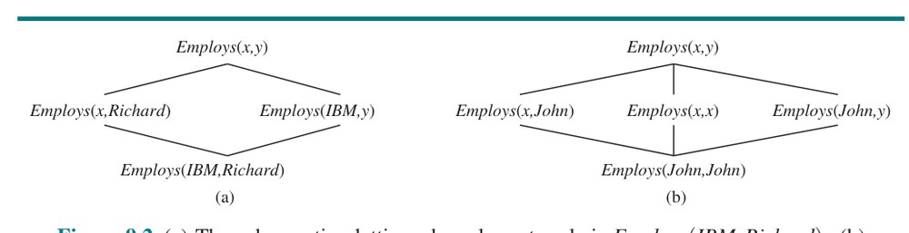
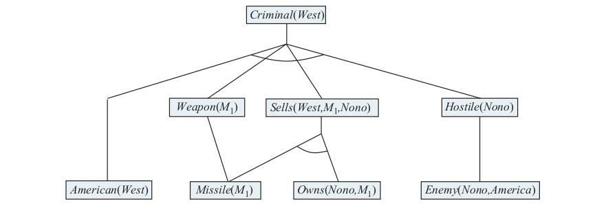
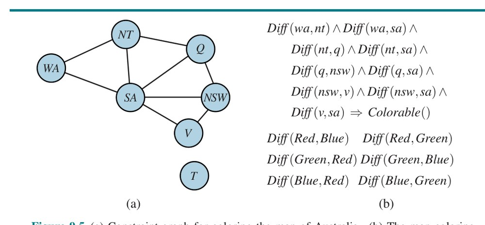
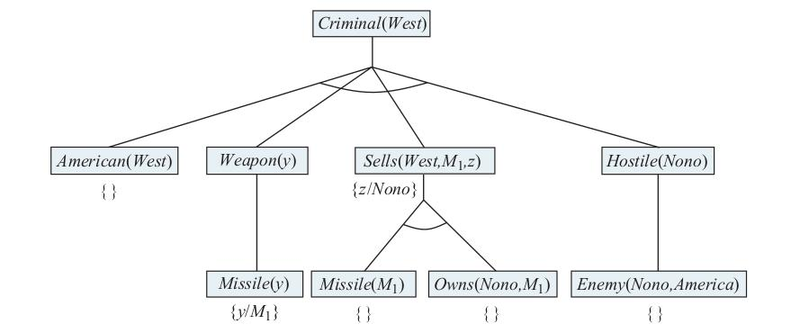
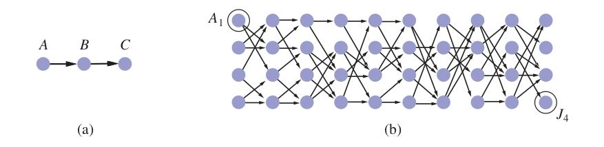
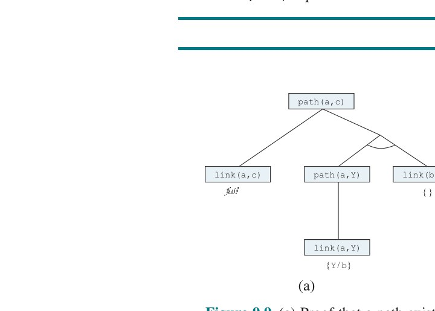
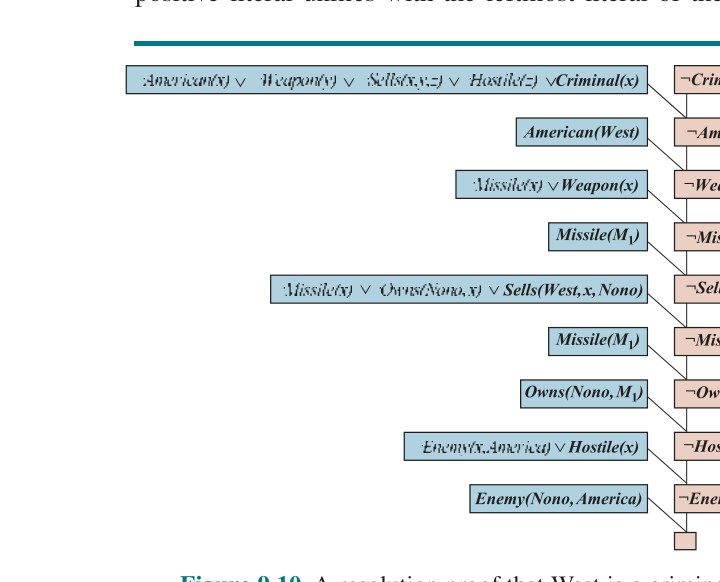
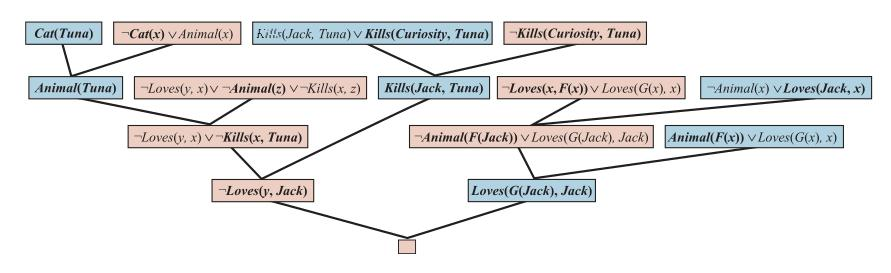
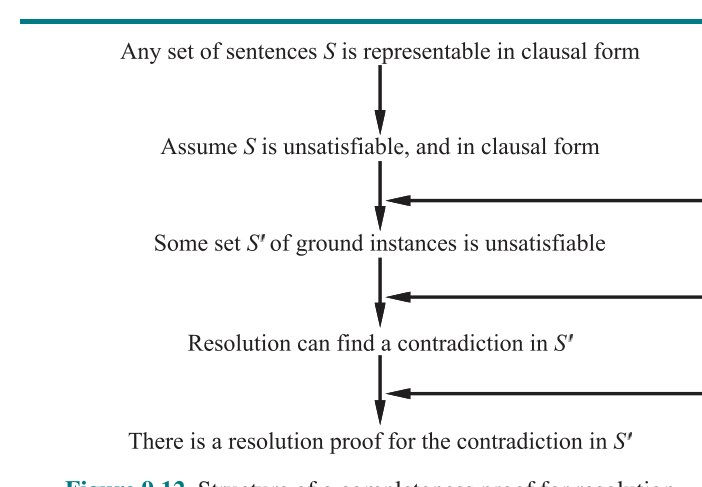

فصل ۹: استنتاج در منطق مرتبهٔ اول (Inference in First-Order Logic)
در این فصل، الگوریتمهایی را توصیف میکنیم که میتوانند به هر پرسشِ پاسخپذیرِ منطق مرتبهٔ اول پاسخ دهند. بخش ۹.۱ قواعد استنتاج برای سورها را معرفی میکند و نشان میدهد چگونه استنتاج مرتبهٔ اول را به استنتاج گزارهای تقلیل دهیم، هرچند احتمالاً به هزینهای بالقوهٔ بزرگ. بخش ۹.۲ توصیف میکند چگونه یکسانسازی (Unification) را میتوان برای ساختن قواعد استنتاجی که مستقیماً با جملههای مرتبهٔ اول کار میکنند استفاده کرد. سپس سه خانوادهٔ بزرگ الگوریتمهای استنتاج مرتبهٔ اول را بحث میکنیم: زنجیرهسازی پیشرو (بخش ۹.۳)، زنجیرهسازی پسرو (بخش ۹.۴) و اثبات قضیهٔ مبتنی بر حل (بخش ۹.۵).
یکی از راههای انجام استنتاج مرتبهٔ اول، تبدیل پایگاه دانش مرتبهٔ اول به منطق گزارهای و استفاده از استنتاج گزارهای است، که از قبل میدانیم چگونه انجامش دهیم. گام نخست حذف سورهای همگانی است. برای نمونه، فرض کنیم پایگاه دانش ما این فرض سنتی را دارد که همهٔ پادشاهان حریص شرورند:
∀x King(x) ∧ Greedy(x) ⇒ Evil(x)از آن میتوانیم هر یک از جملههای زیر را استنتاج کنیم:
King(John) ∧ Greedy(John) ⇒ Evil(John)
King(Richard) ∧ Greedy(Richard) ⇒ Evil(Richard)
King(Father(John)) ∧ Greedy(Father(John)) ⇒ Evil(Father(John))
...در حالت کلی، قاعدهٔ «مصداقسازی همگانی» (Universal Instantiation، به اختصار UI) میگوید میتوانیم هر جملهای را که با جانشینی یک عبارت زمینی (عبارتی بدون متغیر) برای متغیرِ همگانیسوردار به دست میآید استنتاج کنیم.¹
برای نوشتن صوری قاعدهٔ استنتاج، از مفهوم جانشینیهای معرفیشده در بخش ۸.۳ استفاده میکنیم. SUBST(θ, α) نتیجهٔ اعمال جانشینی θ بر جملهٔ α باشد. آنگاه قاعده چنین نوشته میشود:
∀v α
─────────
SUBST({v/g}, α)برای هر متغیر v و عبارت زمینی g. برای نمونه، سه جملهٔ پیشتردادهشده با جانشینیهای {x/John}، {x/Richard} و {x/Father(John)} به دست میآیند.
به همین ترتیب، قاعدهٔ «مصداقسازی وجودی» (Existential Instantiation) متغیرِ وجودیسوردار را با یک نماد ثابت تازه جایگزین میکند. بیان صوری چنین است: برای هر جملهٔ α، متغیر v و نماد ثابت k که در جای دیگر پایگاه دانش ظاهر نمیشود:
∃v α
─────────
SUBST({v/k}, α)برای نمونه، از جملهٔ
∃x Crown(x) ∧ OnHead(x, John)میتوانیم جملهٔ
Crown(C1) ∧ OnHead(C1, John)را استنتاج کنیم، تا وقتی C1 در جای دیگر پایگاه دانش ظاهر نشود. اساساً، جملهٔ وجودی میگوید شیئی هست که شرطی را برآورده میکند و اعمال قاعدهٔ مصداقسازی وجودی فقط به آن شیء نامی میدهد. البته، آن نام نباید از قبل متعلق به شیء دیگری باشد. ریاضیات مثال خوبی میدهد: فرض کنیم کشف کنیم عددی هست که کمی بزرگتر از 2.71828 است و معادلهٔ d(x^y)/dy = x^y را برای x برآورده میکند. میتوانیم به این عدد نام e بدهیم، اما اشتباه است نام شیء موجودی مانند π را به آن بدهیم. در منطق، نام تازه «ثابت اسکولم» (Skolem Constant) نامیده میشود.
در حالی که مصداقسازی همگانی را میتوان بارها بر همان اصلموضوعه اعمال کرد تا پیامدهای متفاوت فراوانی تولید کند، مصداقسازی وجودی فقط یک بار لازم است اعمال شود و سپس جملهٔ وجودیسوردار را میتوان دور ریخت. برای نمونه، پس از افزودن جملهٔ Kill(Murderer, Victim) دیگر به ∃x Kill(x, Victim) نیاز نداریم.
اکنون نشان میدهیم چگونه هر پایگاه دانش مرتبهٔ اولی را به پایگاه دانش گزارهای تبدیل کنیم. ایدهٔ نخست آن است که، درست همانگونه که جملهٔ وجودیسوردار را میتوان با یک مصداقسازی جایگزین کرد، جملهٔ همگانیسوردار را میتوان با مجموعهٔ همهٔ مصداقسازیهای ممکن جایگزین کرد. برای نمونه، فرض کنیم پایگاه دانش ما فقط جملههای زیر را دارد:
∀x King(x) ∧ Greedy(x) ⇒ Evil(x)
King(John)
Greedy(John)
Brother(Richard, John) (۹.۱)و تنها اشیا John و Richard هستند. UI را با همهٔ جانشینیهای ممکن، {x/John} و {x/Richard}، بر جملهٔ نخست اعمال میکنیم. به دست میآوریم:
King(John) ∧ Greedy(John) ⇒ Evil(John)
King(Richard) ∧ Greedy(Richard) ⇒ Evil(Richard)سپس جملههای اتمی زمینی، مانند King(John)، را با نمادهای گزارهای، مانند JohnIsKing، جایگزین میکنیم. سرانجام، هر یک از الگوریتمهای گزارهای کامل فصل ۷ را اعمال میکنیم تا نتیجههایی مانند JohnIsEvil به دست آوریم که با Evil(John) همارز است.
این فن «گزارهسازی» (Propositionalization) را میتوان کاملاً عمومی کرد، چنانکه در بخش ۹.۵ نشان میدهیم. اما مسئلهای هست وقتی پایگاه دانش نماد تابعی داشته باشد: مجموعهٔ جانشینیهای عبارت زمینی ممکن نامتناهی است! برای نمونه، اگر پایگاه دانش نماد Father را ذکر کند، عبارتهای تودرتوی بیشماری مانند Father(Father(Father(John))) قابل ساختاند.
خوشبختانه، قضیهٔ نامداری از ژاک اربن (۱۹۳۰) هست که میگوید اگر جملهای توسط پایگاه دانش مرتبهٔ اول اصلی مستلزم باشد، برهانی شامل فقط زیرمجموعهٔ متناهیای از پایگاه دانش گزارهشده وجود دارد. چون هر چنین زیرمجموعهای بیشینهٔ عمق تودرتویی در میان عبارتهای زمینیاش دارد، میتوانیم زیرمجموعه را بیابیم با نخست تولید همهٔ مصداقسازیها با نمادهای ثابت (Richard و John)، سپس همهٔ عبارتهای عمق ۱ (Father(Richard) و Father(John))، سپس همهٔ عبارتهای عمق ۲، و الی آخر، تا آنکه بتوانیم برهان گزارهای جملهٔ مستلزم را بسازیم.
رویکردی به استنتاج مرتبهٔ اول از طریق گزارهسازی ترسیم کردهایم که کامل است — یعنی هر جملهٔ مستلزمی قابل اثبات است. این دستاورد بزرگی است، با توجه به اینکه فضای مدلهای ممکن نامتناهی است. از سوی دیگر، تا پایان برهان نمیدانیم جمله مستلزم است! وقتی جمله مستلزم نباشد چه رخ میدهد؟ آیا میتوانیم بگوییم؟ خوب، برای منطق مرتبهٔ اول، معلوم میشود نمیتوانیم. رویهٔ برهان ما میتواند ادامه دهد و ادامه دهد و عبارتهای عمیقتر و عمیقتری تولید کند، اما نمیدانیم آیا در حلقهای ناامیدکننده گیر کرده یا برهان در شرف بهدستآمدن است. این بسیار شبیه مسئلهٔ توقف برای ماشینهای تورینگ است. آلن تورینگ (۱۹۳۶) و آلونزو چرچ (۱۹۳۶) هر دو، به روشهای نسبتاً متفاوت، گریزناپذیری این وضعیت امور را اثبات کردند. پرسش ◮ لازمه برای منطق مرتبهٔ اول «نیمهتصمیمپذیر» (Semidecidable) است — یعنی الگوریتمهایی وجود دارند که به هر جملهٔ مستلزم بله میگویند، اما هیچ الگوریتمی وجود ندارد که به هر جملهٔ غیرمستلزم نیز نه بگوید.
خوانندهٔ تیزبین متوجه شده رویکرد گزارهسازی مصداقسازیهای غیرضروری فراوانی از جملههای همگانیسوردار تولید میکند. ترجیح میدهیم رویکردی داشته باشیم که فقط از یک قاعده استفاده کند، با این استدلال که {x/John} پرسوجوی Evil(x) را چنین حل میکند: با توجه به قاعدهٔ «پادشاهان حریص شرورند»، برخی x را بیاب چنانکه x پادشاه و x حریص باشد، و سپس استنتاج کن این x شرور است. عمومیتر، اگر جانشینی θ وجود داشته باشد که هر یک از عطفشوندههای مقدم دلالت را با جملههایی که از قبل در پایگاه دانشاند یکسان کند، آنگاه میتوانیم تالی دلالت را، پس از اعمال θ، ادعا کنیم. در این مورد، جانشینی θ={x/John} به آن هدف میرسد. حال فرض کنیم بهجای دانستن Greedy(John)، بدانیم همه حریصاند:
∀y Greedy(y) (۹.۲)آنگاه باز هم میخواهیم بتوانیم نتیجه بگیریم Evil(John)، زیرا میدانیم جان پادشاه است (دادهشده) و جان حریص است (زیرا همه حریصاند). آنچه برای این کار نیاز داریم یافتن جانشینی برای هم متغیرهای جملهٔ دلالت و هم متغیرهای جملههای موجود در پایگاه دانش است. در این مورد، اعمال جانشینی {x/John, y/John} بر مقدمههای دلالت King(x) و Greedy(x) و جملههای پایگاه دانش King(John) و Greedy(y) آنها را یکسان میکند. پس میتوانیم تالی دلالت را استنتاج کنیم.
این فرایند استنتاج را میتوان در قاعدهٔ استنتاج تکیای به نام «مدوس پوننس تعمیمیافته» (Generalized Modus Ponens)² در آورد: برای جملههای اتمی p′i، pi و q، که در آن جانشینی θ وجود دارد چنانکه:
SUBST(θ, p′i) = SUBST(θ, pi)، برای همهٔ ip′1, p′2, ..., p′n, (p1 ∧ p2 ∧ ... ∧ pn ⇒ q)
──────────────────────────────────────────────
SUBST(θ, q)این قاعده n+1 مقدمه دارد: n جملهٔ اتمی p′i و یک دلالت. نتیجه، حاصل اعمال جانشینی θ بر تالی q است. برای مثال ما:
p′1 = King(John)
p1 = King(x)
p′2 = Greedy(y)
p2 = Greedy(x)
θ = {x/John, y/John}
q = Evil(x)
SUBST(θ, q) = Evil(John)نشاندادن درستبودن مدوس پوننس تعمیمیافته آسان است. نخست، مشاهده میکنیم برای هر جملهٔ p (که متغیرهایش همگانیسوردار فرض میشوند) و هر جانشینی θ،
p ⊨ SUBST(θ, p)طبق مصداقسازی همگانی صادق است. بهویژه برای θای صادق است که شرایط قاعدهٔ مدوس پوننس تعمیمیافته را برآورده میکند. پس از p′1,...,p′n میتوانیم استنتاج کنیم:
SUBST(θ, p′1) ∧ ... ∧ SUBST(θ, p′n)و از دلالت p1 ∧ ... ∧ pn ⇒ q میتوانیم استنتاج کنیم:
SUBST(θ, p1) ∧ ... ∧ SUBST(θ, pn) ⇒ SUBST(θ, q)حال، θ در مدوس پوننس تعمیمیافته چنان تعریف شده که SUBST(θ, p′i) = SUBST(θ, pi) برای همهٔ i؛ پس نخستینِ این دو جمله دقیقاً با مقدم جملهٔ دوم مطابقت میکند. از این رو، SUBST(θ, q) با مدوس پوننس برمیآید.
مدوس پوننس تعمیمیافته نسخهٔ «بالابردهشده» (Lifted) مدوس پوننس است — مدوس پوننس را از منطق گزارهای زمینی (بدون متغیر) به منطق مرتبهٔ اول بالا میبرد. در بقیهٔ این فصل خواهیم دید که میتوانیم نسخههای بالابردهشدهٔ زنجیرهسازی پیشرو، زنجیرهسازی پسرو و الگوریتمهای حلِ معرفیشده در فصل ۷ را توسعه دهیم. مزیت کلیدی قواعد استنتاج بالابرده نسبت به گزارهسازی آن است که فقط آن جانشینیهایی را انجام میدهند که برای اجازهدادن به پیشرفتن استنتاجهای خاص لازماند.
قواعد استنتاج بالابرده مستلزم یافتن جانشینیهایی هستند که عبارتهای منطقی متفاوت را یکسان کنند. این فرایند «یکسانسازی» (Unification) نامیده میشود و مؤلفهٔ کلیدی همهٔ الگوریتمهای استنتاج مرتبهٔ اول است. الگوریتم UNIFY دو جمله میگیرد و «یکسانساز» (Unifier) آنها (یک جانشینی) را بازمیگرداند، اگر وجود داشته باشد:
UNIFY(p, q) = θ که در آن SUBST(θ, p) = SUBST(θ, q)به چند مثال از چگونگی رفتار UNIFY نگاه کنیم. فرض کنیم پرسوجوی AskVars(Knows(John,x)) داریم: جان چه کسی را میشناسد؟ پاسخهای این پرسوجو را میتوان با یافتن همهٔ جملههای پایگاه دانش که با Knows(John,x) یکسان میشوند پیدا کرد. اینها نتایج یکسانسازی با چهار جملهٔ متفاوت است که ممکن است در پایگاه دانش باشد:
UNIFY(Knows(John,x), Knows(John,Jane)) = {x/Jane}
UNIFY(Knows(John,x), Knows(y,Bill)) = {x/Bill, y/John}
UNIFY(Knows(John,x), Knows(y,Mother(y))) = {y/John, x/Mother(John)}
UNIFY(Knows(John,x), Knows(x,Elizabeth)) = failureآخرین یکسانسازی شکست میخورد، زیرا x نمیتواند همزمان مقادیر John و Elizabeth را بگیرد. حال، به یاد آورید Knows(x,Elizabeth) یعنی «همه الیزابت را میشناسند»، پس باید بتوانیم استنتاج کنیم جان الیزابت را میشناسد. مسئله فقط بهسبب آن پیش میآید که دو جمله اتفاقاً از همان نام متغیر x استفاده میکنند. مسئله را میتوان با «استانداردسازی جداسازی» (Standardizing Apart) یکی از دو جملهٔ در حال یکسانسازی اجتناب کرد، که یعنی تغییر نام متغیرهایش برای پرهیز از برخورد نامها. برای نمونه، میتوانیم x در Knows(x,Elizabeth) را به x17 (نام متغیر تازهای) تغییر نام دهیم بدون تغییر معنا. حال یکسانسازی کار خواهد کرد:
UNIFY(Knows(John,x), Knows(x17,Elizabeth)) = {x/Elizabeth, x17/John}تمرین 9.STAN عمیقتر به نیاز به استانداردسازی جداسازی میپردازد.
یک پیچیدگی دیگر هست: گفتیم UNIFY باید جانشینیای بازگرداند که دو آرگومان را یکسان کند. اما میتواند بیش از یک چنین یکسانسازی وجود داشته باشد. برای نمونه، UNIFY(Knows(John,x), Knows(y,z)) میتواند {y/John, x/z} بازگرداند یا میتواند {y/John, x/John, z/John} بازگرداند. یکسانساز نخست Knows(John,z) را بهعنوان نتیجهٔ یکسانسازی میدهد، در حالی که دومین Knows(John,John) میدهد. نتیجهٔ دوم را میتوان از نخستین با جانشینی اضافی {z/John} به دست آورد؛ میگوییم یکسانساز نخست «عمومیتر» از دومین است، زیرا قیدهای کمتری بر مقادیر متغیرها میگذارد.
هر جفت عبارتِ یکسانشدنی یک «عمومیترین یکسانساز» (Most General Unifier، یا MGU) تکی دارد که تا حد تغییر نام و جانشینی متغیر یکتاست. برای نمونه، {x/John} و {y/John} همارز دانسته میشوند، چنانکه {x/John, y/John} و {x/John, y/x}.
الگوریتمی برای محاسبهٔ عمومیترین یکسانسازها در شکل 9.1 نشان داده شده. فرایند ساده است: دو عبارت را بهصورت بازگشتی همزمان «کنار هم» کاوش کن و در طول راه یکسانسازی را بساز، اما اگر دو نقطهٔ متناظر در ساختارها مطابقت نکردند شکست بخور. یک گام پرهزینه هست: هنگام مطابقت متغیر با عبارت پیچیده، باید بررسی شود آیا خودِ متغیر درون عبارت رخ میدهد؛ اگر رخ دهد، مطابقت شکست میخورد، زیرا هیچ یکسانساز سازگاری نمیتوان ساخت. برای نمونه، S(x) نمیتواند با S(S(x)) یکسان شود. این به اصطلاح «بررسی رخداد» (Occur Check) پیچیدگی کل الگوریتم را در اندازهٔ عبارتهای در حال یکسانسازی درجهٔ دوم میکند. برخی سامانهها، از جمله بسیاری از سامانههای برنامهنویسی منطقی، صرفاً بررسی رخداد را حذف میکنند و بار اجتناب از استنتاجهای نادرستِ ناشی از آن را بر دوش کاربر میگذارند. سامانههای دیگر از الگوریتمهای یکسانسازی پیچیدهتری با پیچیدگی زمانی خطی استفاده میکنند.
function UNIFY(x, y, θ = empty) returns a substitution to make x and y identical, or failure
if θ = failure then return failure
else if x = y then return θ
else if VARIABLE?(x) then return UNIFY-VAR(x, y, θ)
else if VARIABLE?(y) then return UNIFY-VAR(y, x, θ)
else if COMPOUND?(x) and COMPOUND?(y) then
return UNIFY(ARGS(x), ARGS(y), UNIFY(OP(x), OP(y), θ))
else if LIST?(x) and LIST?(y) then
return UNIFY(REST(x), REST(y), UNIFY(FIRST(x), FIRST(y), θ))
else return failure
function UNIFY-VAR(var, x, θ) returns a substitution
if {var/val} ∈ θ for some val then return UNIFY(val, x, θ)
else if {x/val} ∈ θ for some val then return UNIFY(var, val, θ)
else if OCCUR-CHECK?(var, x) then return failure
else return add {var/x} to θزیربنای توابع TELL، ASK و ASKVARS که برای آگاهکردن و بازجویی از پایگاه دانش استفاده میشوند، توابع ابتداییتر STORE و FETCH هستند. STORE(s) جملهٔ s را در پایگاه دانش ذخیره میکند و FETCH(q) همهٔ یکسانسازهایی را بازمیگرداند چنانکه پرسوجوی q با جملهای در پایگاه دانش یکسان شود. مسئلهای که برای نشان دادن یکسانسازی استفاده کردیم — یافتن همهٔ واقعیتهایی که با Knows(John,x) یکسان میشوند — مصداقی از FETCH است.
سادهترین راه پیادهسازی STORE و FETCH آن است که همهٔ واقعیتها را در یک فهرست بلند نگه داریم و هر پرسوجو را با هر عنصر فهرست یکسان کنیم. چنین فرایندی ناکارآمد است، اما کار میکند. بقیهٔ این بخش راههایی برای کارآمدترکردن بازیابی ترسیم میکند.
میتوانیم FETCH را کارآمدتر کنیم با اطمینان از اینکه یکسانسازیها فقط با جملههایی که شانسی برای یکسانشدن دارند انجام میشوند. برای نمونه، هیچ فایدهای در تلاش برای یکسانکردن Knows(John,x) با Brother(Richard,John) نیست. میتوانیم با «فهرستبندی» (Indexing) واقعیتهای پایگاه دانش از چنین یکسانسازیهایی اجتناب کنیم. طرح سادهای به نام «فهرستبندی گزارهای» (Predicate Indexing) همهٔ واقعیتهای Knows را در یک سطل و همهٔ واقعیتهای Brother را در سطلی دیگر میگذارد. سطلها را میتوان در جدول درهمسازی برای دسترسی کارآمد ذخیره کرد.
فهرستبندی گزارهای وقتی مفید است که نمادهای گزارهای فراوان اما برای هر نماد بندهای اندکی باشد. گاهی اما، گزارهای بندهای فراوان دارد. برای نمونه، فرض کنیم مقامهای مالیاتی میخواهند پیگیری کنند چه کسی چه کسی را استخدام میکند، با گزارهٔ Employs(x,y). این سطل بسیار بزرگی خواهد بود با شاید میلیونها کارفرما و دهها میلیون کارمند. پاسخ به پرسوجویی مانند Employs(x,Richard) با فهرستبندی گزارهای مستلزم پویش کل سطل خواهد بود.
برای این پرسوجوی خاص، کمک میکرد اگر واقعیتها هم با گزاره و هم با آرگومان دوم فهرستبندی میشدند، شاید با کلید جدول درهمسازی ترکیبی. آنگاه میتوانستیم بهسادگی کلید را از پرسوجو بسازیم و دقیقاً آن واقعیتهایی را بازیابی کنیم که با پرسوجو یکسان میشوند. برای پرسوجوهای دیگر، مانند Employs(IBM,y)، لازم بود واقعیتها را با ترکیب گزاره با آرگومان نخست فهرستبندی کنیم. پس واقعیتها را میتوان زیر چندین کلید فهرست ذخیره کرد و آنها را برای پرسوجوهای گوناگونی که ممکن است با آنها یکسان شوند فوراً قابل دسترسی کرد.
با جملهای برای ذخیره، میتوان فهرستهایی برای همهٔ پرسوجوهای ممکنی که با آن یکسان میشوند ساخت. برای واقعیت Employs(IBM,Richard)، پرسوجوها عبارتاند از:
| پرسوجو | معنی |
|---|---|
| Employs(IBM,Richard) | آیا IBM ریچارد را استخدام میکند؟ |
| Employs(x,Richard) | چه کسی ریچارد را استخدام میکند؟ |
| Employs(IBM,y) | IBM چه کسی را استخدام میکند؟ |
| Employs(x,y) | چه کسی چه کسی را استخدام میکند؟ |
این پرسوجوها «شبکهٔ زیرشمولی» (Subsumption Lattice) تشکیل میدهند، چنانکه در شکل ۹.۲(الف). شبکه خواص جالبی دارد. فرزند هر گره در شبکه از والدش با یک جانشینی تکی به دست میآید؛ و «بالاترین» نوادهٔ مشترک هر دو گره، نتیجهٔ اعمال عمومیترین یکسانساز آنهاست. جملهای با ثابتهای تکراری شبکهای کمی متفاوت دارد، چنانکه در شکل ۹.۲(ب). هرچند نمادهای تابع در شکل نشان داده نشدهاند، آنها را نیز میتوان در ساختار شبکه گنجاند.

برای گزارههای با شمار کم آرگومان، ایجاد فهرستی برای هر نقطه از شبکهٔ زیرشمولی دادوستد خوبی است. این کار کمی بیشتر در زمان ذخیرهسازی لازم دارد، اما زمان بازیابی را سرعت میبخشد. اما برای گزارهای با n آرگومان، شبکه O(2ⁿ) گره دارد. اگر نمادهای تابع مجاز باشند، شمار گرهها نیز در اندازهٔ عبارتهای جملهٔ در حال ذخیره نمایی است. این میتواند به شمار عظیمی فهرست بینجامد.
باید بهنحوی فهرستها را به آنهایی محدود کنیم که احتمالاً در پرسوجوها مکرراً استفاده میشوند؛ وگرنه زمان بیشتری در ایجاد فهرستها تلف میکنیم تا آنچه با داشتنشان صرفهجویی میکنیم. میتوانیم سیاست ثابتی بپذیریم، مانند نگهداشتن فهرستها فقط روی کلیدهای متشکل از گزاره بهعلاوهٔ یک آرگومان تکی. یا میتوانیم سیاست سازگارشوندهای یاد بگیریم که فهرستهایی برای برآوردن تقاضاهای انواع پرسوجوهای پرسیدهشده ایجاد کند. برای پایگاههای دادهٔ تجاری که واقعیتها در آنها به میلیاردها میرسد، این مسئله موضوع مطالعهٔ فشرده، توسعهٔ فناوری و بهینهسازی مداوم بوده است.
در بخش 7.5 الگوریتم زنجیرهسازی پیشرو برای پایگاههای دانش بندهای معین گزارهای نشان دادیم. در اینجا آن ایده را بسط میدهیم تا بندهای معین مرتبهٔ اول را پوشش دهد.
البته برخی جملههای منطقی هست که نمیتوان آنها را بهصورت بند معین بیان کرد و بنابراین این رویکرد نمیتواند آنها را مدیریت کند. اما قواعدی به شکل مقدم ⇒ تالی برای پوشش گسترهٔ وسیعی از سامانههای جهان واقعیِ جالب کافیاند.
بندهای معین مرتبهٔ اول فصلهایی از لیتِرالها هستند که دقیقاً یکی از آنها مثبت است. این بدان معناست بند معین یا اتمی است، یا دلالتی است که مقدمش عطفی از لیتِرالهای مثبت و تالیاش لیتِرال مثبت تکی است. سورهای وجودی مجاز نیستند و سورهای همگانی ضمنیاند: اگر x را در بند معینی میبینید، یعنی سور ضمنی ∀x هست. بند معین مرتبهٔ اول نمونهای شبیه این است:
King(x) ∧ Greedy(x) ⇒ Evil(x)اما لیتِرالهای King(John) و Greedy(y) نیز بند معین شمرده میشوند. لیتِرالهای مرتبهٔ اول میتوانند متغیر داشته باشند، پس Greedy(y) بهصورت «همه حریصاند» تفسیر میشود (سور همگانی ضمنی است).
بگذارید بندهای معین را در بازنمایی مسئلهٔ زیر به کار ببریم:
قانون میگوید جنایت است برای یک آمریکایی که به ملتهای خصمانه سلاح بفروشد. کشور نونو، دشمن آمریکا، موشکهایی دارد و همهٔ موشکهایش توسط سرهنگ وست، که آمریکایی است، به آن فروخته شده.
نخست، این واقعیتها را بهصورت بندهای معین مرتبهٔ اول بازنمایی میکنیم:
«... جنایت است برای یک آمریکایی که به ملتهای خصمانه سلاح بفروشد»:
American(x) ∧ Weapon(y) ∧ Sells(x,y,z) ∧ Hostile(z) ⇒ Criminal(x) (۹.۳)«نونو ... موشکهایی دارد». جملهٔ ∃x Owns(Nono,x) ∧ Missile(x) با مصداقسازی وجودی به دو بند معین تبدیل میشود و ثابت تازهٔ M1 معرفی میشود:
Owns(Nono, M1) (۹.۴)
Missile(M1) (۹.۵)«همهٔ موشکهایش توسط سرهنگ وست به آن فروخته شده»:
Missile(x) ∧ Owns(Nono,x) ⇒ Sells(West,x,Nono) (۹.۶)همچنین باید بدانیم موشکها سلاحاند:
Missile(x) ⇒ Weapon(x) (۹.۷)و باید بدانیم دشمن آمریکا «خصمانه» شمرده میشود:
Enemy(x, America) ⇒ Hostile(x) (۹.۸)«وست، که آمریکایی است ...»:
American(West) (۹.۹)«کشور نونو، دشمن آمریکا ...»:
Enemy(Nono, America) (۹.۱۰)این پایگاه دانش اتفاقاً «پایگاه دانش دیتالاگ» (Datalog) است: دیتالاگ زبانی است شامل بندهای معین مرتبهٔ اول بدون نمادهای تابع. دیتالاگ نامش را از آن میگیرد که میتواند نوع گزارههایی را که معمولاً در پایگاههای دادهٔ رابطهای بیان میشوند بازنمایی کند. نبود نمادهای تابع استنتاج را بسیار آسانتر میکند.
شکل 9.3 الگوریتم استنتاج زنجیرهسازی پیشروی ساده نشان میدهد. با شروع از واقعیتهای شناختهشده، همهٔ قواعدی را که مقدمههایشان برآورده شده فعال میکند و نتیجههایشان را به واقعیتهای شناختهشده میافزاید. فرایند تکرار میشود تا پرسوجو پاسخ داده شود (با فرض اینکه فقط یک پاسخ لازم است) یا واقعیت تازهای افزوده نشود. توجه کنید واقعیت «تازه» نیست اگر فقط «تغییر نام» (Renaming) واقعیت شناختهشدهای باشد — جملهای تغییر نام دیگری است اگر جز نام متغیرها یکسان باشند. برای نمونه، Likes(x, IceCream) و Likes(y, IceCream) تغییر نام یکدیگرند. هر دو همان معنا را میدهند: «همه بستنی دوست دارند.»
function FOL-FC-ASK(KB, α) returns a substitution or false
inputs: KB, a knowledge base, a set of definite clauses in first-order logic
α, a query, an atomic sentence
while true do
new ← {} // set of newly inferred sentences in each iteration
for each rule in KB do
(p1 ∧ ... ∧ pn ⇒ q) ← STANDARDIZE-VARIABLES(rule)
for each θ such that SUBST(θ, p1 ∧ ... ∧ pn) = SUBST(θ, p′1 ∧ ... ∧ p′n)
for some p′1, ..., p′n in KB do
q′ ← SUBST(θ, q)
if q′ is not already in KB or new then
add q′ to new
φ ← UNIFY(q′, α)
if φ is not failure then return φ
if new = {} then return false
add new to KBاز مثال جنایت برای نشان دادن نحوهٔ کارکرد FOL-FC-ASK استفاده میکنیم. جملههای دلالتیِ در دسترس برای زنجیرهسازی عبارتاند از (9.3)، (9.6)، (9.7) و (9.8). دو تکرار لازم است:
قاعدهٔ (9.6) با {x/M1} برآورده میشود و Sells(West,M1,Nono) افزوده میشود. قاعدهٔ (9.7) با {x/M1} برآورده میشود و Weapon(M1) افزوده میشود. قاعدهٔ (9.8) با {x/Nono} برآورده میشود و Hostile(Nono) افزوده میشود.
شکل ۹.۴ درخت برهانی را نشان میدهد که تولید میشود. توجه کنید در این نقطه استنتاج تازهای ممکن نیست، زیرا هر جملهای که میشد با زنجیرهسازی پیشرو نتیجه گرفت از قبل صریحاً در KB موجود است. چنین پایگاه دانشی «نقطهٔ ثابت» (Fixed Point) فرایند استنتاج نامیده میشود. نقاط ثابتِ رسیدهشده با زنجیرهسازی پیشرو با بندهای معین مرتبهٔ اول شبیه آنها برای زنجیرهسازی پیشرو گزارهای (صفحهٔ ۲۳۱) هستند؛ تفاوت اصلی آن است که نقطهٔ ثابت مرتبهٔ اول میتواند جملههای اتمی همگانیسوردار را شامل شود.

تحلیل FOL-FC-ASK آسان است. نخست، درست است، زیرا هر استنتاج فقط کاربردی از مدوس پوننس تعمیمیافته است که درست است. دوم، برای پایگاههای دانش بند معین کامل است؛ یعنی به هر پرسوجویی که پاسخهایش توسط هر پایگاه دانشی از بندهای معین مستلزماند پاسخ میدهد.
برای پایگاههای دانش دیتالاگ، که نماد تابع ندارند، برهان کامل بودن نسبتاً آسان است. با شمارش تعداد واقعیتهایی که میتوان افزود آغاز میکنیم، که بیشینهٔ تعداد تکرارها را تعیین میکند. فرض کنیم k بیشینهٔ تعداد آرگومان (تعداد آرگومانها) هر گزاره، p تعداد گزارهها، و n تعداد نمادهای ثابت باشد. بدیهی است نمیتوان بیش از p·nᵏ واقعیت زمینی متمایز باشد، پس پس از این تعداد تکرار الگوریتم باید به نقطهٔ ثابت رسیده باشد. سپس میتوانیم استدلالی بسیار شبیه برهان کامل بودن زنجیرهسازی پیشرو گزارهای کنیم. (صفحهٔ ۲۳۱ را ببینید.) جزئیات چگونگی گذار از کامل بودن گزارهای به مرتبهٔ اول برای الگوریتم حل در بخش ۹.۵ داده شده.
برای بندهای معین عمومی با نمادهای تابع، FOL-FC-ASK میتواند واقعیتهای تازهٔ بیشماری تولید کند، پس باید دقیقتر باشیم. برای موردی که پاسخ پرسوجوی q مستلزم است، باید به قضیهٔ اربن (صفحهٔ ۲۸۲) توسل بجوییم تا ثابت کنیم الگوریتم برهانی خواهد یافت. (برای مورد حل، بخش ۹.۵ را ببینید.) اگر پرسوجو پاسخی نداشته باشد، الگوریتم در برخی موارد ممکن است پایان نیابد. برای نمونه، اگر پایگاه دانش شامل اصلموضوعههای پئانو باشد:
NatNum(0)
∀n NatNum(n) ⇒ NatNum(S(n))آنگاه زنجیرهسازی پیشرو NatNum(S(0))، NatNum(S(S(0)))، NatNum(S(S(S(0)))) و الی آخر را میافزاید. این مسئله در حالت کلی اجتنابناپذیر است. مانند منطق مرتبهٔ اول عمومی، لازمه با بندهای معین نیمهتصمیمپذیر است.
الگوریتم زنجیرهسازی پیشرو در شکل 9.3 برای سهولت فهم طراحی شده، نه کارایی. سه منبع ناکارآمدی هست. نخست، حلقهٔ درونی الگوریتم میکوشد هر قاعده را با هر واقعیت پایگاه دانش مطابقت دهد. دوم، الگوریتم هر قاعده را در هر تکرار دوباره بررسی میکند، حتی اگر تعداد بسیار کمی افزوده به پایگاه دانش شده باشد. سوم، الگوریتم میتواند واقعیتهای فراوانی تولید کند که به هدف بیربطاند. به هر یک از این مسائل بهنوبت میپردازیم.
مطابقت قواعد با واقعیتهای شناختهشده
مسئلهٔ مطابقت مقدم قاعده با واقعیتهای پایگاه دانش ممکن است به اندازهٔ کافی ساده به نظر برسد. برای نمونه، فرض کنیم میخواهیم قاعدهٔ
Missile(x) ⇒ Weapon(x)را اعمال کنیم. پس باید همهٔ واقعیتهایی را بیابیم که با Missile(x) یکسان میشوند؛ در پایگاه دانشِ بهدرستی فهرستبندیشده، این میتواند در زمان ثابت برای هر واقعیت انجام شود. حال قاعدهای مانند
Missile(x) ∧ Owns(Nono,x) ⇒ Sells(West,x,Nono)را در نظر بگیرید. باز هم، میتوانیم همهٔ اشیای متعلق به نونو را در زمان ثابت برای هر شیء بیابیم؛ سپس، برای هر شیء، میتوانیم بررسی کنیم آیا موشک است. اما اگر پایگاه دانش شامل اشیای فراوانِ متعلق به نونو و موشکهای بسیار اندک باشد، بهتر بود نخست همهٔ موشکها را بیابیم و سپس بررسی کنیم آیا متعلق به نونو هستند. این «مسئلهٔ ترتیب عطفشوندهها» (Conjunct Ordering) است: ترتیبی برای حل عطفشوندههای مقدم قاعده بیاب چنانکه هزینهٔ کل کمینه شود. معلوم میشود یافتن ترتیب بهینه NP-سخت است، اما اکتشافیهای خوبی در دسترساند. برای نمونه، اکتشافی کمترین-مقادیر-باقیمانده (MRV) که برای CSPها در فصل ۶ استفاده شد، ترتیب عطفشوندهها را پیشنهاد میکرد اگر موشکها از اشیای متعلق به نونو کمترند، نخست به دنبال موشکها بگرد.
پیوند میان این مطابقت الگو و ارضای قید در واقع بسیار نزدیک است. میتوانیم هر عطفشونده را قیدی بر متغیرهایی که شاملش میکند ببینیم — برای نمونه، Missile(x) قید یکتایی بر x است. با بسط این ایده، میتوانیم هر مسئلهٔ ارضای قید (CSP) با دامنهٔ متناهی را بهصورت یک بند معین تکی همراه با برخی واقعیتهای زمینی مرتبط بیان کنیم. مسئلهٔ رنگآمیزی نقشه از شکل 6.1 را در نظر بگیرید، که دوباره در شکل ۹.۵(الف) نشان داده شده. صورتبندی همارز بهصورت بند معین تکی در شکل ۹.۵(ب) داده شده. بدیهی است نتیجهٔ Colorable() فقط اگر CSP راهحلی داشته باشد قابل استنتاج است. چون CSPها در حالت کلی مسائل 3-SAT را بهعنوان حالت خاص شامل میشوند، میتوانیم نتیجه بگیریم مطابقت یک بند معین با مجموعهای از واقعیتها در حالت کلی NP-سخت است.

ممکن است افسردهکننده به نظر برسد که زنجیرهسازی پیشرو مسئلهٔ مطابقت NP-سختی در حلقهٔ درونیاش دارد. سه راه برای دلداری خودمان هست:
Diff(wa,nt) ∧ Diff(nt,q) ∧ Diff(q,nsw) ∧ Diff(nsw,v) ⇒ Colorable()با CSP کاهشیافتهٔ نشاندادهشده در شکل 6.12 در صفحهٔ ۲۰۱ متناظر است. الگوریتمهای حل CSPهای درختساختار را میتوان مستقیماً بر مسئلهٔ مطابقت قاعده اعمال کرد.
زنجیرهسازی پیشرو افزایشی
وقتی نشان دادیم زنجیرهسازی پیشرو چگونه روی مثال جنایت کار میکند، تقلب کردیم. بهویژه، برخی از مطابقتهای قاعدهای را که الگوریتم نشاندادهشده در شکل 9.3 انجام میدهد حذف کردیم. برای نمونه، در تکرار دوم، قاعدهٔ
Missile(x) ⇒ Weapon(x)با Missile(M1) مطابقت میکند (دوباره)، و البته نتیجهٔ Weapon(M1) از قبل معلوم است، پس چیزی رخ نمیدهد. چنین مطابقت قاعدهایِ زائدی را میتوان اجتناب کرد اگر مشاهدهٔ زیر را بکنیم: هر واقعیت تازهای که در تکرار t استنتاج میشود باید از دستکم یک ◭ واقعیت تازهٔ استنتاجشده در تکرار t−1 مشتق شده باشد. این درست است، زیرا هر استنتاجی که به واقعیت تازهای از تکرار t−1 نیاز نداشته باشد، میشد از قبل در تکرار t−1 انجام شود.
این مشاهده بهطور طبیعی به الگوریتم زنجیرهسازی پیشروی افزایشی میانجامد که در آن، در تکرار t، قاعدهای را فقط اگر مقدمش شامل عطفشوندهٔ pi باشد که با واقعیتِ تازهاستنتاجشدهای p′i در تکرار t−1 یکسان شود بررسی میکنیم. گام مطابقت قاعده سپس pi را برای مطابقت با p′i ثابت میکند، اما به دیگر عطفشوندههای قاعده اجازه میدهد با واقعیتهای هر تکرار قبلی مطابقت کنند. این الگوریتم در هر تکرار دقیقاً همان واقعیتهای الگوریتم شکل 9.3 را تولید میکند، اما بسیار کارآمدتر است.
با فهرستبندی مناسب، شناسایی همهٔ قواعدی که توسط واقعیتِ دادهشدهای فعال میشوند آسان است و بسیاری از سامانههای واقعی در حالت «بهروزرسانی» عمل میکنند که در آن زنجیرهسازی پیشرو در پاسخ به هر TELL رخ میدهد. استنتاجها در میان مجموعهٔ قواعد آبشاری میشوند تا نقطهٔ ثابت رسیده شود و سپس فرایند برای واقعیت تازهٔ بعدی دوباره آغاز میشود.
معمولاً فقط کسر کوچکی از قواعد پایگاه دانش واقعاً توسط افزودن واقعیتِ دادهشدهای فعال میشوند. این بدان معناست کار زائد فراوانی در ساختن مکرر مطابقتهای جزئی که برخی مقدمههای برآوردهنشده دارند انجام میشود. مثال جنایت ما برای نشان دادن مؤثر این خیلی کوچک است، اما توجه کنید مطابقت جزئی در تکرار نخست میان قاعدهٔ
American(x) ∧ Weapon(y) ∧ Sells(x,y,z) ∧ Hostile(z) ⇒ Criminal(x)و واقعیت American(West) ساخته میشود. سپس این مطابقت جزئی دور ریخته و در تکرار دوم دوباره ساخته میشود (وقتی قاعده موفق میشود). بهتر بود مطابقتهای جزئی را با رسیدن واقعیتهای تازه نگه داشت و بهتدریج کامل کرد، بهجای دور ریختنشان.
الگوریتم ریت (Rete)³ نخستین الگوریتمی بود که این مسئله را حل کرد. الگوریتم مجموعهٔ قواعد پایگاه دانش را پیشپردازش میکند تا شبکهٔ جریان دادهای بسازد که در آن هر گره لیتِرالی از مقدم قاعده است. اتصالهای متغیر در شبکه جریان مییابند و وقتی در مطابقت با لیتِرالی شکست میخورند فیلتر میشوند. اگر دو لیتِرال در قاعده متغیری مشترک داشته باشند — برای نمونه، Sells(x,y,z) ∧ Hostile(z) در مثال جنایت — آنگاه اتصالهای هر لیتِرال از گرهٔ برابری فیلتر میشوند. اتصال متغیری که به گرهای برای لیتِرال n-تایی مانند Sells(x,y,z) میرسد ممکن است مجبور باشد برای برقرارشدن اتصالهای متغیرهای دیگر صبر کند تا فرایند بتواند ادامه یابد. در هر نقطهٔ معین، حالت شبکهٔ ریت همهٔ مطابقتهای جزئی قواعد را در میگیرد و از بازمحاسبهٔ فراوان جلوگیری میکند.
شبکههای ریت، و بهبودهای گوناگونشان، مؤلفهٔ کلیدیِ به اصطلاح «سامانههای تولیدی» (Production Systems) بودهاند که از نخستین سامانههای زنجیرهسازی پیشرو در استفادهٔ گسترده بودند.⁴ سامانهٔ XCON (در اصل R1 نامیده میشد؛ مکدرموت، ۱۹۸۲) با معماری سامانهٔ تولیدی ساخته شد. XCON شامل چند هزار قاعده برای طراحی پیکربندیهای مؤلفههای رایانهای برای مشتریان شرکت تجهیزات دیجیتال بود. این یکی از نخستین موفقیتهای تجاری روشن در حوزهٔ نوظهور سامانههای خبره بود. بسیاری سامانههای مشابه دیگر با همان فناوری زیربنایی ساخته شدهاند که در زبان عمومیمنظورهٔ OPS-5 پیاده شده است.
سامانههای تولیدی همچنین در «معماریهای شناختی» (Cognitive Architectures) — یعنی مدلهای استدلال انسانی — مانند ACT (اندرسون، ۱۹۸۳) و SOAR (لیرد و همکاران، ۱۹۸۷) محبوباند. در چنین سامانههایی، «حافظهٔ کاری» سامانه، حافظهٔ کوتاهمدت انسانی را مدل میکند و تولیدها بخشی از حافظهٔ بلندمدتاند. در هر چرخهٔ عملیات، تولیدها با حافظهٔ کاری واقعیتها مطابقت داده میشوند. تولیدی که شرایطش برآورده شده میتواند واقعیتهایی در حافظهٔ کاری بیفزاید یا حذف کند. در برابر وضعیت معمول در پایگاههای داده، سامانههای تولیدی اغلب قواعد فراوان و واقعیتهای نسبتاً اندک دارند. با فناوری مطابقتِ بهدرستی بهینهشده، سامانهها میتوانند با دهها میلیون قاعده در زمان واقعی عمل کنند.
واقعیتهای بیربط
منبع دیگر ناکارآمدی آن است که زنجیرهسازی پیشرو همهٔ استنتاجهای مجاز را بر اساس واقعیتهای شناختهشده انجام میدهد، حتی اگر به هدف بیربط باشند. در مثال جنایت ما، قاعدهای قادر به نتیجهگیریهای بیربط نبود. اما اگر قواعد فراوانی وجود داشت که عادتهای غذایی آمریکاییها یا مؤلفهها و قیمتهای موشکها را توصیف میکرد، FOL-FC-ASK نتیجهگیریهای بیربط تولید میکرد.
یکی از راههای پرهیز از نتیجهگیریهای بیربط، استفاده از زنجیرهسازی پسرو است، چنانکه در بخش ۹.۴ توصیف شده. راه دیگر محدودکردن زنجیرهسازی پیشرو به زیرمجموعهٔ انتخابی از قواعد است، مانند PL-FC-ENTAILS? (صفحهٔ ۲۳۱). رویکرد سوم در حوزهٔ «پایگاههای دادهٔ قیاسی» (Deductive Databases) پدیدار شده، که پایگاههای دادهٔ بزرگمقیاسی مانند پایگاههای دادهٔ رابطهایاند، اما از زنجیرهسازی پیشرو بهعنوان ابزار استنتاج استاندارد استفاده میکنند نه پرسوجوهای SQL. ایده آن است که مجموعهقواعد را، با استفاده از اطلاعات هدف، بازنویسی کنیم تا فقط اتصالهای متغیرِ مرتبط — آنهایی که متعلق به اصطلاحاً «مجموعهٔ جادویی» (Magic Set) هستند — در استنتاج پیشرو در نظر گرفته شوند. برای نمونه، اگر هدف Criminal(West) باشد، قاعدهای که Criminal(x) را نتیجه میگیرد بازنویسی میشود تا عطفشوندهٔ اضافیای شامل شود که مقدار x را قید میکند:
Magic(x) ∧ American(x) ∧ Weapon(y) ∧ Sells(x,y,z) ∧ Hostile(z) ⇒ Criminal(x)واقعیت Magic(West) نیز به KB افزوده میشود. بدین ترتیب، حتی اگر پایگاه دانش شامل واقعیتهایی دربارهٔ میلیونها آمریکایی باشد، فقط سرهنگ وست در فرایند استنتاج پیشرو در نظر گرفته خواهد شد. فرایند کامل تعریف مجموعههای جادویی و بازنویسی پایگاه دانش برای توضیح دادن در اینجا بیش از حد پیچیده است، اما ایدهٔ پایه انجام نوعی «استنتاج پسروی عمومی» از هدف است تا مشخص شود کدام اتصالهای متغیر باید قید شوند. رویکرد مجموعههای جادویی را پس میتوان نوعی دورگه میان استنتاج پیشرو و پیشپردازش پسرو دانست.
دومین خانوادهٔ بزرگ الگوریتمهای استنتاج منطقی از زنجیرهسازی پسرو روی بندهای معین استفاده میکند. این الگوریتمها از هدف به عقب کار میکنند و از میان قواعد زنجیره میکنند تا واقعیتهای شناختهشدهای بیابند که برهان را پشتیبانی کنند.
شکل 9.6 الگوریتم زنجیرهسازی پسرو برای بندهای معین نشان میدهد. FOL-BC-ASK(KB, goal) اثبات خواهد شد اگر پایگاه دانش قاعدهای به شکل lhs ⇒ goal شامل شود، که lhs (سمت چپ) فهرستی از عطفشوندههاست. واقعیت اتمی مانند American(West) بندی با lhs خالی در نظر گرفته میشود. حال پرسوجویی که متغیر دارد ممکن است به چند طریق اثبات شود. برای نمونه، پرسوجوی Person(x) میتواند با جانشینی {x/John} و نیز با {x/Richard} اثبات شود. پس FOL-BC-ASK را بهصورت مولد (Generator) پیاده میکنیم — تابعی که چند بار بازمیگردد و هر بار یک نتیجهٔ ممکن میدهد (پیوست ب را ببینید).
زنجیرهسازی پسرو نوعی جستجوی AND/OR است — بخش OR از آن رو که پرسوجوی هدف را میتوان با هر قاعدهای در پایگاه دانش اثبات کرد، و بخش AND از آن رو که همهٔ عطفشوندههای lhs بند باید اثبات شوند. FOL-BC-OR با واکشی همهٔ بندهایی کار میکند که ممکن است با هدف یکسان شوند، متغیرهای بند را به متغیرهای کاملاً تازه استانداردسازی میکند، و سپس، اگر rhs بند واقعاً با هدف یکسان شود، هر عطفشوندهٔ lhs را با FOL-BC-AND اثبات میکند. آن تابع با اثبات هر یک از عطفشوندهها بهنوبت کار میکند و جانشینی انباشتهشده را هنگام پیشرفتن پیگیری میکند. شکل ۹.۷ درخت برهان برای مشتقکردن Criminal(West) از جملههای (9.3) تا (9.10) است.
function FOL-BC-ASK(KB, query) returns a generator of substitutions
return FOL-BC-OR(KB, query, {})
function FOL-BC-OR(KB, goal, θ) returns a substitution
for each rule in FETCH-RULES-FOR-GOAL(KB, goal) do
(lhs ⇒ rhs) ← STANDARDIZE-VARIABLES(rule)
for each θ′ in FOL-BC-AND(KB, lhs, UNIFY(rhs, goal, θ)) do
yield θ′
function FOL-BC-AND(KB, goals, θ) returns a substitution
if θ = failure then return
else if LENGTH(goals) = 0 then yield θ
else
first, rest ← FIRST(goals), REST(goals)
for each θ′ in FOL-BC-OR(KB, SUBST(θ, first), θ) do
for each θ′′ in FOL-BC-AND(KB, rest, θ′) do
yield θ′′
زنجیرهسازی پسرو، چنانکه نوشتهایم، بدیهی است الگوریتم جستجوی عمق-اول است. این بدان معناست نیازهای فضایش در اندازهٔ برهان خطی است. همچنین بدان معناست زنجیرهسازی پسرو (برخلاف زنجیرهسازی پیشرو) از مسائل حالتهای تکراری و ناکامل بودن رنج میبرد. با وجود این محدودیتها، زنجیرهسازی پسرو در زبانهای برنامهنویسی منطقی محبوب و مؤثر ثابت شده.
برنامهنویسی منطقی فناوریای است که به آرمان اعلانیِ توصیفشده در فصل ۷ نزدیک میشود: اینکه سامانهها باید با بیان دانش در زبان صوری ساخته شوند و مسائل باید با اجرای فرایندهای استنتاج روی آن دانش حل شوند. این آرمان در معادلهٔ رابرت کوالسکی خلاصه میشود:
پرولوگ (Prolog) پرکاربردترین زبان برنامهنویسی منطقی است. عمدتاً بهعنوان زبان نمونهسازی سریع و برای تکلیفهای دستکاری نماد مانند نوشتن کامپایلر (ون روی، ۱۹۹۰) و تجزیهٔ زبان طبیعی (پریرا و وارن، ۱۹۸۰) استفاده میشود. سامانههای خبرهٔ بسیاری در پرولوگ برای حوزههای حقوقی، پزشکی، مالی و دیگر حوزهها نوشته شده.
برنامههای پرولوگ مجموعههایی از بندهای معیناند که با نمادی تا حدی متفاوت از منطق مرتبهٔ اول استاندارد نوشته میشوند. پرولوگ برای متغیرها حروف بزرگ و برای ثابتها حروف کوچک استفاده میکند — برعکس قرارداد ما برای منطق. ویرگولها عطفشوندهها را در بند جدا میکنند و بند «برعکس» آنچه به آن عادت داریم نوشته میشود؛ بهجای A ∧ B ⇒ C در پرولوگ داریم C :- A, B. اینجا مثال نمونهای است:
criminal(X) :- american(X), weapon(Y), sells(X,Y,Z), hostile(Z).در پرولوگ نماد [E|L] فهرستی را نشان میدهد که نخستین عنصرش E و بقیهاش L است. اینجا برنامهٔ پرولوگی برای append(X,Y,Z) است که اگر فهرست Z نتیجهٔ بههمچسباندن فهرستهای X و Y باشد موفق میشود:
append([],Y,Y).
append([A|X],Y,[A|Z]) :- append(X,Y,Z).به انگلیسی، میتوانیم این بندها را چنین بخوانیم: (۱) بههمچسباندن فهرست خالی و فهرست Y همان فهرست Y را تولید میکند؛ و (۲) [A|Z] نتیجهٔ بههمچسباندن [A|X] و Y است، به شرط آنکه Z نتیجهٔ بههمچسباندن X و Y باشد. در بیشتر زبانهای سطحبالا میتوانیم تابع بازگشتی مشابهی بنویسیم که توصیف میکند چگونه دو فهرست را به هم بچسبانیم. تعریف پرولوگ اما در واقع قدرتمندتر است، زیرا رابطهای را توصیف میکند که میان سه آرگومان برقرار است، نه تابعی که از دو آرگومان محاسبه میشود. برای نمونه، میتوانیم پرسوجوی append(X,Y,[1,2,3]) را بپرسیم: کدام دو فهرست را میتوان به هم چسباند تا [1,2,3] داده شود؟ پرولوگ راهحلها را به ما برمیگرداند:
X=[] Y=[1,2,3];
X=[1] Y=[2,3];
X=[1,2] Y=[3];
X=[1,2,3] Y=[]اجرای برنامههای پرولوگ از طریق زنجیرهسازی پسروی عمق-اول انجام میشود، که در آن بندها به ترتیبی که در پایگاه دانش نوشته شدهاند امتحان میشوند. طراحی پرولوگ مصالحهای میان اعلانیبودن و کارایی اجراست. برخی جنبههای پرولوگ خارج از استنتاج منطقی استاندارد میافتند:
اکنون به پاشنهٔ آشیل پرولوگ میپردازیم: ناهماهنگی میان جستجوی عمق-اول و درختهای جستجویی که حالتهای تکراری و مسیرهای بینهایت شامل میشوند. برنامهٔ منطقی زیر را در نظر بگیرید که تصمیم میگیرد آیا مسیری بین دو نقطه روی گراف جهتدار وجود دارد:
path(X,Z) :- link(X,Z).
path(X,Z) :- path(X,Y), link(Y,Z).گراف سادهٔ سهگرهای، که با واقعیتهای link(a,b) و link(b,c) توصیف شده، در شکل ۹.۸(الف) نشان داده شده. با این برنامه، پرسوجوی path(a,c) درخت برهانِ نشاندادهشده در شکل ۹.۹(الف) را تولید میکند. از سوی دیگر، اگر دو بند را به این ترتیب بگذاریم:
path(X,Z) :- path(X,Y), link(Y,Z).
path(X,Z) :- link(X,Z).آنگاه پرولوگ مسیر بینهایتِ نشاندادهشده در شکل ۹.۹(ب) را دنبال میکند. پرولوگ پس بهعنوان اثباتکنندهٔ قضیه برای بندهای معین ناقص است — حتی برای برنامههای دیتالاگ، چنانکه این مثال نشان میدهد — زیرا برای برخی پایگاههای دانش، در اثبات جملههای مستلزم شکست میخورد. توجه کنید زنجیرهسازی پیشرو از این مسئله رنج نمیبرد: پس از استنتاج path(a,b)، path(b,c) و path(a,c)، زنجیرهسازی پیشرو میایستد.


زنجیرهسازی پسروی عمق-اول همچنین با محاسبات زائد مسئله دارد. برای نمونه، هنگام یافتن مسیری از A1 به J4 در شکل ۹.۸(ب)، پرولوگ ۸۷۷ استنتاج انجام میدهد که بیشتر آنها شامل یافتن همهٔ مسیرهای ممکن به گرههایی است که هدف از آنها دستنیافتنی است. این شبیه مسئلهٔ حالتهای تکراریِ بحثشده در فصل ۳ است. مقدار کل استنتاج میتواند در تعداد واقعیتهای زمینیِ تولیدشده نمایی باشد. اگر بهجایش زنجیرهسازی پیشرو اعمال کنیم، حداکثر n² واقعیت path(X,Y) میتواند تولید شود که n گره را متصل کند. برای مسئلهٔ شکل ۹.۸(ب)، فقط ۶۲ استنتاج لازم است.
زنجیرهسازی پیشرو روی مسائل جستجوی گراف مثالی از «برنامهنویسی پویا» (Dynamic Programming) است، که در آن راهحلهای زیرمسئلهها بهصورت افزایشی از راهحلهای زیرمسئلههای کوچکتر ساخته و برای پرهیز از بازمحاسبه کش میشوند. میتوانیم اثر مشابهی در سامانهٔ زنجیرهسازی پسرو به دست آوریم، بهجز آنکه در اینجا هدفهای بزرگ را به هدفهای کوچکتر میشکنیم، نه آنکه آنها را بسازیم.
در هر دو صورت، ذخیرهٔ نتایج میانی برای پرهیز از تکرار کلیدی است. این رویکردی است که «سامانههای برنامهنویسی منطقی جدولبندیشده» (Tabled Logic Programming) میگیرند، که از سازوکارهای کارآمد ذخیرهسازی و بازیابی استفاده میکنند. برنامهنویسی منطقی جدولبندیشده هدفمحوری زنجیرهسازی پسرو را با کارایی برنامهنویسی پویای زنجیرهسازی پیشرو ترکیب میکند. همچنین برای پایگاههای دانش دیتالاگ کامل است، یعنی برنامهنویس کمتر باید نگران حلقههای بینهایت باشد. (هنوز امکان گرفتن حلقهٔ بینهایت با گزارههایی مانند father(X,Y) که به تعداد بالقوه بیکران اشیا ارجاع میکنند هست.)
پرولوگ از معناشناسی پایگاهداده استفاده میکند، چنانکه در بخش 8.2.8 بحث شد. فرض نامهای یکتا میگوید هر ثابت پرولوگ و هر عبارت زمینی به شیء متمایزی اشاره میکند، و فرض جهان بسته میگوید تنها جملههای صادق آنهایی هستند که توسط پایگاه دانش مستلزماند. هیچ راهی برای ادعای کاذببودن جملهای در پرولوگ نیست. این پرولوگ را از منطق مرتبهٔ اول کمبیانتر میکند، اما بخشی از آن چیزی است که پرولوگ را کارآمدتر و موجزتر میکند. ادعاهای زیر را دربارهٔ برخی درسهای ارائهشده در نظر بگیرید:
Course(CS,101), Course(CS,102), Course(CS,106), Course(EE,101) (۹.۱۱)تحت فرض نامهای یکتا، CS و EE متفاوتاند (چنانکه 101، 102 و 106)، پس این بدان معناست چهار درس متمایز هست. تحت فرض جهان بسته درس دیگری نیست، پس دقیقاً چهار درس هست. اما اگر اینها ادعاهایی در FOL بودند نه در معناشناسی پایگاهداده، تنها چیزی که میتوانستیم بگوییم آن بود که بین یک و بینهایت درس هست. این بهسبب آن است که ادعاها (در FOL) امکان ارائهشدن درسهای نامبردهنشدهٔ دیگر را نفی نمیکنند، و نمیگویند درسهای نامبرده از یکدیگر متمایزند. اگر میخواستیم معادلهٔ (9.11) را به FOL ترجمه کنیم، جملهٔ زیر را میگرفتیم:
Course(d,n) ⇔ (d = CS ∧ n = 101) ∨ (d = CS ∧ n = 102) ∨ (d = CS ∧ n = 106) ∨ (d = EE ∧ n = 101) (۹.۱۲)این «تکمیل» (Completion) معادلهٔ (9.11) نامیده میشود. در FOL ایدهٔ «حداکثر چهار درس» را بیان میکند. برای بیان در FOL ایدهٔ «حداقل چهار درس»، باید تکمیل گزارهٔ برابری را بنویسیم:
x = y ⇔ (x = CS ∧ y = CS) ∨ (x = EE ∧ y = EE) ∨ (x = 101 ∧ y = 101) ∨ (x = 102 ∧ y = 102) ∨ (x = 106 ∧ y = 106)تکمیل برای فهم معناشناسی پایگاهداده مفید است، اما برای مقاصد عملی، اگر مسئلهتان را بتوان با معناشناسی پایگاهداده توصیف کرد، کارآمدتر است با پرولوگ یا سامانهٔ معناشناسی پایگاهدادهٔ دیگر استدلال کنید، تا ترجمه به FOL و استدلال با اثباتکنندهٔ قضیهٔ کامل FOL.
در بحثمان از زنجیرهسازی پیشرو (بخش ۹.۳)، نشان دادیم چگونه مسئلههای ارضای قیود (CSPها) را میتوان بهصورت بندهای معین رمزگذاری کرد. پرولوگ استاندارد چنین مسائلی را دقیقاً به همان شیوهٔ الگوریتم عقبگردِ دادهشده در شکل 6.5 حل میکند.
چون عقبگرد دامنههای متغیرها را برمیشمارد، فقط برای CSPهای دامنهمتناهی کار میکند. به زبان پرولوگ، برای هر هدف با متغیرهای بیاتصال باید تعداد متناهی راهحل باشد. (برای نمونه، مسئلهٔ رنگآمیزی نقشهای که در آن هر متغیر میتواند یکی از چهار رنگ مختلف بگیرد.) CSPهای دامنهنامتناهی — برای نمونه، با متغیرهای مقدار صحیح یا حقیقی — به الگوریتمهای کاملاً متفاوتی نیاز دارند، مانند انتشار کران یا برنامهریزی خطی.
مثال زیر را در نظر بگیرید. triangle(X,Y,Z) را بهصورت گزارهای تعریف میکنیم که اگر سه آرگومان اعدادی باشند که نابرابری مثلث را برآورده میکنند برقرار است:
triangle(X,Y,Z) :- X>0, Y>0, Z>0, X+Y>Z, Y+Z>X, X+Z>Y.اگر از پرولوگ پرسوجوی triangle(3,4,5) را بپرسیم، موفق میشود. از سوی دیگر، اگر triangle(3,4,Z) را بپرسیم، هیچ راهحلی یافت نمیشود، زیرا زیرهدف Z>0 توسط پرولوگ قابل مدیریت نیست؛ نمیتوانیم مقدار بیاتصال را با ۰ مقایسه کنیم.
«برنامهنویسی منطق قیدی» (Constraint Logic Programming، یا CLP) به متغیرها اجازه میدهد «قید» شوند نه اتصال. راهحل CLP مشخصترین مجموعهقیدهای روی متغیرهای پرسوجوست که از پایگاه دانش قابل اشتقاق است. برای نمونه، راهحل پرسوجوی triangle(3,4,Z) قید 7 > Z > 1 است. برنامههای منطقی استاندارد فقط حالت خاصی از CLP هستند که در آن قیدهای راهحل باید قیدهای برابری باشند — یعنی اتصالها.
سامانههای CLP الگوریتمهای حل قید گوناگونی را برای قیدهای مجاز در زبان در خود جای میدهند. برای نمونه، سامانهای که نابرابریهای خطی روی متغیرهای مقدار حقیقی را اجازه میدهد ممکن است الگوریتم برنامهریزی خطی برای حل آن قیدها شامل شود. سامانههای CLP همچنین رویکرد بسیار انعطافپذیرتری به حل پرسوجوهای استاندارد برنامهنویسی منطقی اتخاذ میکنند. برای نمونه، بهجای عقبگرد عمق-اول چپ-به-راست، ممکن است از هر یک از الگوریتمهای کارآمدتر بحثشده در فصل ۶ استفاده کنند، از جمله ترتیب عطفشوندهٔ اکتشافی، پرش به عقب، شرطیسازی مجموعهبرش و الی آخر. سامانههای CLP پس عناصر الگوریتمهای ارضای قید، برنامهنویسی منطقی و پایگاههای دادهٔ قیاسی را ترکیب میکنند.
چند سامانه که به برنامهنویس کنترل بیشتری بر ترتیب جستجوی استنتاج میدهند تعریف شدهاند. زبان MRS (جنزِرت و اسمیت، ۱۹۸۱؛ راسل، ۱۹۸۵) به برنامهنویس اجازه میدهد «فراقاعده»ها (Metarules) بنویسد تا تعیین کند کدام عطفشوندهها نخست امتحان شوند. کاربر میتوانست قاعدهای بنویسد که میگوید هدف با کمترین متغیر باید نخست امتحان شود یا میتوانست قواعد حوزهویژه برای گزارههای خاص بنویسد.
آخرینِ سه خانوادهٔ سامانههای منطقی ما، و تنها یکی که برای هر پایگاه دانشی کار میکند، نه فقط بندهای معین، «حل» (Resolution) است. در صفحهٔ ۲۲۳ دیدیم حل گزارهای رویهٔ استنتاج کاملی برای منطق گزارهای است؛ در این بخش، آن را به منطق مرتبهٔ اول بسط میدهیم.
گام نخست تبدیل جملهها به شکل عادی عطفی (CNF) است — یعنی عطفی از بندها، که هر بند فصلی از لیتِرالهاست.⁵ در CNF، لیتِرالها میتوانند متغیر داشته باشند، که همگانیسوردار فرض میشوند. برای نمونه، جملهٔ
∀x,y,z American(x) ∧ Weapon(y) ∧ Sells(x,y,z) ∧ Hostile(z) ⇒ Criminal(x)در CNF میشود:
¬American(x) ∨ ¬Weapon(y) ∨ ¬Sells(x,y,z) ∨ ¬Hostile(z) ∨ Criminal(x)نکتهٔ کلیدی آن است که هر جملهٔ منطق مرتبهٔ اول را میتوان به جملهٔ CNFِ همارز استنتاجی تبدیل کرد.
رویهٔ تبدیل به CNF شبیه حالت گزارهای است که در صفحهٔ ۲۲۶ دیدیم. تفاوت اصلی از نیاز به حذف سورهای وجودی ناشی میشود. رویه را با ترجمهٔ جملهٔ «هرکس که همهٔ جانوران را دوست دارد، توسط کسی دوست داشته میشود»، یا
∀x [∀y Animal(y) ⇒ Loves(x,y)] ⇒ [∃y Loves(y,x)]نشان میدهیم. گامها چنیناند:
دلالتها را حذف کن: P ⇒ Q را با ¬P ∨ Q جایگزین کن. برای جملهٔ نمونهٔ ما، این باید دو بار انجام شود:
∀x ¬[∀y Animal(y) ⇒ Loves(x,y)] ∨ [∃y Loves(y,x)]
∀x ¬[∀y ¬Animal(y) ∨ Loves(x,y)] ∨ [∃y Loves(y,x)]¬ را به درون ببر: افزون بر قواعد معمول برای عوامل ربط نقیضشده، به قواعدی برای سورهای نقیضشده نیاز داریم:
¬∀x p تبدیل میشود به ∃x ¬p
¬∃x p تبدیل میشود به ∀x ¬pجملهٔ ما از تبدیلهای زیر میگذرد:
∀x [∃y ¬(¬Animal(y) ∨ Loves(x,y))] ∨ [∃y Loves(y,x)]
∀x [∃y ¬¬Animal(y) ∧ ¬Loves(x,y)] ∨ [∃y Loves(y,x)]
∀x [∃y Animal(y) ∧ ¬Loves(x,y)] ∨ [∃y Loves(y,x)]توجه کنید چگونه سور همگانی (∀y) در مقدم دلالت وجودی شده. جمله اکنون چنین خوانده میشود: «یا جانوری هست که x دوستش ندارد، یا (اگر چنین نیست) کسی هست که x را دوست دارد.» بدیهی است معنای جملهٔ اصلی حفظ شده.
متغیرها را استانداردسازی کن: برای جملههایی مانند (∃x P(x)) ∨ (∃x Q(x)) که از همان نام متغیر دو بار استفاده میکنند، نام یکی از متغیرها را تغییر بده. این از سردرگمی بعداً هنگام انداختن سورها جلوگیری میکند:
∀x [∃y Animal(y) ∧ ¬Loves(x,y)] ∨ [∃z Loves(z,x)]اسکولمسازی (Skolemization): اسکولمسازی فرایند حذف سورهای وجودی است. در حالت ساده، دقیقاً مانند قاعدهٔ مصداقسازی وجودی بخش ۹.۱ است: ∃x P(x) را به P(A) ترجمه کن، که A نماد ثابت تازهای است. اما نمیتوانیم مصداقسازی وجودی را بر جملهٔ بالای خود اعمال کنیم، زیرا با الگوی ∃v α مطابقت ندارد؛ فقط بخشهایی از جمله با الگو مطابقت دارند. اگر کورکورانه قاعده را بر دو بخش مطابق اعمال کنیم میگیریم:
∀x [Animal(A) ∧ ¬Loves(x,A)] ∨ Loves(B,x)که معنایی کاملاً اشتباه دارد: میگوید هرکس یا در دوستداشتن جانور خاصی A ناکام است یا توسط موجود خاصی B دوست داشته میشود. در واقع، جملهٔ اصلی به هر شخص اجازه میدهد در دوستداشتن جانوری متفاوت ناکام باشد یا توسط شخص متفاوتی دوست داشته شود. پس میخواهیم موجودیتهای اسکولم به x وابسته باشند:
∀x [Animal(F(x)) ∧ ¬Loves(x,F(x))] ∨ Loves(G(x),x)در اینجا F و G «توابع اسکولم» (Skolem Functions) هستند. قاعدهٔ کلی آن است که آرگومانهای تابع اسکولم همهٔ متغیرهای همگانیسورداری هستند که سور وجودی در حوزهٔ آنها ظاهر میشود. مانند مصداقسازی وجودی، جملهٔ اسکولمشده دقیقاً وقتی ارضاپذیر است که جملهٔ اصلی ارضاپذیر باشد.
سورهای همگانی را بینداز: در این نقطه، همهٔ متغیرهای باقیمانده باید همگانیسوردار باشند. پس اگر سور را بیندازیم اطلاعاتی از دست نمیدهیم:
[Animal(F(x)) ∧ ¬Loves(x,F(x))] ∨ Loves(G(x),x)∨ را بر ∧ توزیع کن:
[Animal(F(x)) ∨ Loves(G(x),x)] ∧ [¬Loves(x,F(x)) ∨ Loves(G(x),x)]این گام ممکن است همچنین به صافکردن عطفها و فصلهای تودرتو نیاز داشته باشد.
جمله اکنون در CNF است و از دو بند تشکیل شده. خواندنش بسیار دشوارتر از جملهٔ اصلی با دلالتهاست. (ممکن است کمک کند توضیح دهیم تابع اسکولم F(x) به جانوری اشاره دارد که احتمالاً توسط x دوست داشته نمیشود، در حالی که G(x) به کسی اشاره دارد که ممکن است x را دوست داشته باشد.) خوشبختانه، انسانها بهندرت لازم است به جملههای CNF نگاه کنند — فرایند ترجمه بهراحتی خودکار میشود.
قاعدهٔ حل برای بندهای مرتبهٔ اول صرفاً نسخهٔ بالابردهشدهٔ قاعدهٔ حل گزارهایِ دادهشده در صفحهٔ ۲۲۶ است. دو بند، که فرض میشود استانداردسازی جداسازی شدهاند تا متغیر مشترکی نداشته باشند، اگر لیتِرالهای مکمل داشته باشند قابل حلاند. لیتِرالهای گزارهای مکملاند اگر یکی نقیض دیگری باشد؛ لیتِرالهای مرتبهٔ اول مکملاند اگر یکی با نقیض دیگری یکسان شود. پس داریم:
ℓ1 ∨ ... ∨ ℓk, m1 ∨ ... ∨ mn
─────────────────────────────────────────
SUBST(θ, ℓ1 ∨ ... ∨ ℓi−1 ∨ ℓi+1 ∨ ... ∨ ℓk ∨ m1 ∨ ... ∨ mj−1 ∨ mj+1 ∨ ... ∨ mn)که UNIFY(ℓi, ¬mj) = θ. برای نمونه، میتوانیم دو بند
[Animal(F(x)) ∨ Loves(G(x),x)]و
[¬Loves(u,v) ∨ ¬Kills(u,v)]را با حذف لیتِرالهای مکمل Loves(G(x),x) و ¬Loves(u,v)، با یکسانساز θ={u/G(x), v/x}، حل کنیم تا بند حاصلحل تولید شود:
[Animal(F(x)) ∨ ¬Kills(G(x),x)]این قاعده «قاعدهٔ حل دودویی» (Binary Resolution) نامیده میشود، زیرا دقیقاً دو لیتِرال را حل میکند. قاعدهٔ حل دودویی به تنهایی رویهٔ استنتاج کاملی به دست نمیدهد. قاعدهٔ کامل حل، زیرمجموعههایی از لیتِرالها در هر بند را که یکسانشدنیاند حل میکند. رویکرد جایگزین بسط «عاملگیری» — حذف لیتِرالهای زائد — به حالت مرتبهٔ اول است. عاملگیری گزارهای دو لیتِرال را اگر یکسان باشند به یکی کاهش میدهد؛ عاملگیری مرتبهٔ اول دو لیتِرال را اگر یکسانشدنی باشند به یکی کاهش میدهد. یکسانساز باید بر کل بند اعمال شود. ترکیب حل دودویی و عاملگیری کامل است.
حل ثابت میکند KB ⊨ α با اثبات ارضاپذیرنبودن KB ∧ ¬α — یعنی با مشتقکردن بند خالی. رویکرد الگوریتمی با حالت گزارهایِ توصیفشده در شکل 7.13 یکسان است، پس لازم نیست اینجا تکرارش کنیم. در عوض، دو برهان نمونه میدهیم. نخستین، مثال جنایت از بخش ۹.۳ است. جملههای در CNF عبارتاند از:
¬American(x) ∨ ¬Weapon(y) ∨ ¬Sells(x,y,z) ∨ ¬Hostile(z) ∨ Criminal(x)
¬Missile(x) ∨ ¬Owns(Nono,x) ∨ Sells(West,x,Nono)
¬Enemy(x,America) ∨ Hostile(x)
¬Missile(x) ∨ Weapon(x)
Owns(Nono,M1)
Missile(M1)
American(West)
Enemy(Nono,America)همچنین هدف نقیضشدهٔ ¬Criminal(West) را شامل میشویم. برهان حل در شکل ۹.۱۰ نشان داده شده. به ساختار توجه کنید: «ستون فقرات» تکی که با بند هدف آغاز میشود و با بندهایی از پایگاه دانش حل میشود تا بند خالی تولید شود. این ویژگی حل روی پایگاههای دانش بند هورن است. در واقع، بندهای طول ستون فقرات اصلی دقیقاً با مقادیر پیاپی متغیر goals در الگوریتم زنجیرهسازی پسروی شکل 9.6 متناظرند. این بهسبب آن است که همیشه انتخاب میکنیم با بندی حل کنیم که لیتِرال مثبتش با چپترین لیتِرال بند «کنونی» روی ستون فقرات یکسان میشود؛ این دقیقاً همان چیزی است که در زنجیرهسازی پسرو رخ میدهد. پس زنجیرهسازی پسرو فقط حالت خاصی از حل با راهبرد کنترل خاصی برای تصمیمگیری اینکه کدام حل بعدی انجام شود است.

مثال دوم ما از اسکولمسازی استفاده میکند و بندهایی را شامل میشود که بند معین نیستند. این به ساختار برهان تا حدی پیچیدهتری میانجامد. به انگلیسی:
هرکس که همهٔ جانوران را دوست دارد، توسط کسی دوست داشته میشود. هرکس که جانوری را بکشد، توسط هیچکس دوست داشته نمیشود. جک همهٔ جانوران را دوست دارد. یا جک یا کوریوسیتی گربه را کشت، که تونا نام دارد. آیا کوریوسیتی گربه را کشت؟
نخست، جملههای اصلی، برخی دانش زمینهای و هدف نقیضشدهٔ G را در منطق مرتبهٔ اول بیان میکنیم:
A. ∀x [∀y Animal(y) ⇒ Loves(x,y)] ⇒ [∃y Loves(y,x)]
B. ∀x [∃z Animal(z) ∧ Kills(x,z)] ⇒ [∀y ¬Loves(y,x)]
C. ∀x Animal(x) ⇒ Loves(Jack,x)
D. Kills(Jack,Tuna) ∨ Kills(Curiosity,Tuna)
E. Cat(Tuna)
F. ∀x Cat(x) ⇒ Animal(x)
¬G. ¬Kills(Curiosity,Tuna)حال رویهٔ تبدیل را برای تبدیل هر جمله به CNF اعمال میکنیم:
A1. Animal(F(x)) ∨ Loves(G(x),x)
A2. ¬Loves(x,F(x)) ∨ Loves(G(x),x)
B. ¬Loves(y,x) ∨ ¬Animal(z) ∨ ¬Kills(x,z)
C. ¬Animal(x) ∨ Loves(Jack,x)
D. Kills(Jack,Tuna) ∨ Kills(Curiosity,Tuna)
E. Cat(Tuna)
F. ¬Cat(x) ∨ Animal(x)
¬G. ¬Kills(Curiosity,Tuna)برهان حل که کوریوسیتی گربه را کشت در شکل ۹.۱۱ داده شده. به انگلیسی، برهان را میتوان چنین بازگویی کرد:
فرض کن کوریوسیتی تونا را نکشت. میدانیم یا جک یا کوریوسیتی کشت؛ پس جک باید کشته باشد. حال، تونا گربه است و گربهها جانورند، پس تونا جانور است. چون هرکس که جانوری را بکشد توسط هیچکس دوست داشته نمیشود، میدانیم هیچکس جک را دوست ندارد. از سوی دیگر، جک همهٔ جانوران را دوست دارد، پس کسی او را دوست دارد؛ پس تناقض داریم. بنابراین، کوریوسیتی گربه را کشت.
برهان به پرسش «آیا کوریوسیتی گربه را کشت؟» پاسخ میدهد، اما اغلب میخواهیم پرسشهای عمومیتری بپرسیم، مانند «چه کسی گربه را کشت؟» حل میتواند این کار را بکند، اما برای گرفتن پاسخ کمی کار بیشتر لازم است. هدف ∃w Kills(w,Tuna) است که وقتی نقیض شود، در CNF ¬Kills(w,Tuna) میشود. با تکرار برهان شکل ۹.۱۱ با هدف نقیضشدهٔ تازه، درخت برهان مشابهی به دست میآوریم، اما با جانشینی {w/Curiosity} در یکی از گامها. پس در این مورد، فهمیدن اینکه چه کسی گربه را کشت فقط مسئلهٔ پیگیری اتصالهای متغیرهای پرسوجو در برهان است. متأسفانه، حل گاهی میتواند برای هدفهای وجودی «برهانهای غیرسازنده» (Nonconstructive Proofs) تولید کند، که در آن میدانیم پرسوجو صادق است، اما اتصال یکتایی برای متغیر نیست.

این بخش برهان کاملی از حل میدهد. کسانی که مایلاند آن را بدیهی بگیرند میتوانند با خیال راحت از آن بگذرند.
نشان میدهیم حل «ابطالکامل» (Refutation Complete) است، یعنی اگر مجموعهای از جملهها ارضاپذیر نباشد، حل همیشه قادر به مشتقکردن تناقض خواهد بود. حل را نمیتوان برای تولید همهٔ پیامدهای منطقی مجموعهای از جملهها استفاده کرد، اما میتوان از آن برای اثبات اینکه جملهٔ دادهشدهای توسط مجموعهجمله مستلزم است استفاده کرد. از این رو، میتوان از آن برای یافتن همهٔ پاسخهای پرسشِ دادهشدهٔ Q(x) با اثبات ارضاپذیرنبودن KB ∧ ¬Q(x) استفاده کرد.
بدیهی میگیریم هر جملهای در منطق مرتبهٔ اول (بدون برابری) را میتوان بهصورت مجموعهای از بندها در CNF بازنویسی کرد. این را میتوان با استقرا بر شکل جمله، با استفاده از جملههای اتمی بهعنوان حالت پایه، اثبات کرد (دیویس و پاتنم، ۱۹۶۰). هدف ما پس اثبات زیر است: اگر S مجموعهبندی ارضاپذیر نباشد، آنگاه اعمال تعداد متناهی گام حل بر S تناقضی به بار خواهد آورد.
طرح برهانمان از برهان اصلی رابینسون با برخی سادهسازیها از جنزِرت و نیلسون (۱۹۸۷) پیروی میکند. ساختار پایهٔ برهان (شکل ۹.۱۲) چنین است:
برای انجام گام نخست، به سه مفهوم تازه نیاز داریم:
(الف) نمادهای تابع در S، اگر باشند. (ب) نمادهای ثابت در S، اگر باشند؛ اگر هیچ نبود، نماد ثابت پیشفرض، A. برای نمونه، اگر S فقط بند ¬P(x,F(x,A)) ∨ ¬Q(x,A) ∨ R(x,B) را شامل شود، HS مجموعهٔ نامتناهی زیر از عبارتهای زمینی است:
{A, B, F(A,A), F(A,B), F(B,A), F(B,B), F(A,F(A,A)), ...}{¬P(A,F(A,A)) ∨ ¬Q(A,A) ∨ R(A,B),
¬P(B,F(B,A)) ∨ ¬Q(B,A) ∨ R(B,B),
¬P(F(A,A),F(F(A,A),A)) ∨ ¬Q(F(A,A),A) ∨ R(F(A,A),B),
¬P(F(A,B),F(F(A,B),A)) ∨ ¬Q(F(A,B),A) ∨ R(F(A,B),B),
...}این تعریفها به ما امکان میدهند شکلی از قضیهٔ اربن را بیان کنیم (اربن، ۱۹۳۰):
S′ این زیرمجموعهٔ متناهی از جملههای زمینی باشد. حال، میتوانیم به قضیهٔ حل زمینی (صفحهٔ ۲۲۸) توسل بجوییم تا نشان دهیم بستار حل RC(S′) شامل بند خالی است. یعنی اجرای حل گزارهای تا تکمیل بر S′ تناقضی مشتق خواهد کرد.
حال که ثابت کردهایم همیشه برهان حلی شامل زیرمجموعهٔ متناهیای از پایهٔ اربن S هست، گام بعدی نشاندادن این است که برهان حلی با استفاده از خودِ بندهای S وجود دارد، که لزوماً بندهای زمینی نیستند. با در نظر گرفتن یک کاربرد تکی از قاعدهٔ حل آغاز میکنیم. رابینسون این لم را بیان کرد:

این «لم بالابردن» نامیده میشود، زیرا گام برهان را از بندهای زمینی به بندهای مرتبهٔ اول عمومی بالا میبرد. برای اثبات لم بالابردن پایهاش، رابینسون مجبور شد یکسانسازی را اختراع کند و همهٔ ویژگیهای عمومیترین یکسانسازها را مشتق کند. بهجای تکرار برهان در اینجا، صرفاً لم را نشان میدهیم:
C1 = ¬P(x,F(x,A)) ∨ ¬Q(x,A) ∨ R(x,B)
C2 = ¬N(G(y),z) ∨ P(H(y),z)
C′1 = ¬P(H(B),F(H(B),A)) ∨ ¬Q(H(B),A) ∨ R(H(B),B)
C′2 = ¬N(G(B),F(H(B),A)) ∨ P(H(B),F(H(B),A))
C′ = ¬N(G(B),F(H(B),A)) ∨ ¬Q(H(B),A) ∨ R(H(B),B)
C = ¬N(G(y),F(H(y),A)) ∨ ¬Q(H(y),A) ∨ R(H(y),B)میبینیم در واقع C′ مصداق زمینی C است. در حالت کلی، برای اینکه C′1 و C′2 حاصلحلی داشته باشند، باید با اعمال عمومیترین یکسانساز یک جفت لیتِرال مکمل در C1 و C2 بر C1 و C2 ساخته شده باشند. از لم بالابردن، مشتقکردن گزارهٔ مشابهی دربارهٔ هر توالی از کاربردهای قاعدهٔ حل آسان است:
از این واقعیت برمیآید که اگر بند خالی در بستار حل S′ ظاهر شود، باید در بستار حل S نیز ظاهر شود. این بهسبب آن است که بند خالی نمیتواند مصداق زمینی بند دیگری باشد. برای جمعبندی: نشان دادهایم اگر S ارضاپذیر نباشد، اشتقاق متناهیای از بند خالی با استفاده از قاعدهٔ حل وجود دارد.
بالابردن اثبات قضیه از بندهای زمینی به بندهای مرتبهٔ اول افزایش عظیمی در قدرت میدهد. این افزایش از این واقعیت میآید که برهان مرتبهٔ اول فقط تا حد لازم برای برهان متغیرها را مصداقسازی میکند، در حالی که روشهای بند زمینی مجبور بودند شمار عظیمی از مصداقسازیهای دلخواه را بررسی کنند.
هیچیک از روشهای استنتاجِ تاکنونتوصیفشده در این فصل نمیتواند ادعایی به شکل x = y را بدون کار اضافی مدیریت کند. سه رویکرد متمایز میتوان گرفت. نخستین، اصلموضوعهسازی برابری است — نوشتن جملههایی دربارهٔ رابطهٔ برابری در پایگاه دانش. باید بگوییم برابری بازتابی، متقارن و متعدی است، و نیز باید بگوییم میتوانیم برابر را در هر گزاره یا تابعی با برابر جانشین کنیم. پس به سه اصلموضوعهٔ پایه نیاز داریم، و سپس یکی برای هر گزاره و تابع:
∀x x = x
∀x,y x = y ⇒ y = x
∀x,y,z x = y ∧ y = z ⇒ x = z
∀x,y x = y ⇒ (P1(x) ⇔ P1(y))
∀x,y x = y ⇒ (P2(x) ⇔ P2(y)) ...
∀w,x,y,z w = y ∧ x = z ⇒ (F1(w,x) = F1(y,z))
∀w,x,y,z w = y ∧ x = z ⇒ (F2(w,x) = F2(y,z)) ...با این جملهها، رویهٔ استنتاج استانداردی مانند حل میتواند تکلیفهای نیازمند استدلال برابری، مانند حل معادلههای ریاضی، را انجام دهد. اما این اصلموضوعهها نتیجههای فراوانی تولید خواهند کرد، بیشترشان به برهان کمکی نمیکنند. پس رویکرد دوم افزودن قواعد استنتاج بهجای اصلموضوعههاست. سادهترین قاعده، «دمادولاسیون» (Demodulation)، بند واحد x=y و بندی α که شامل عبارت x است میگیرد و بند تازهای میدهد که با جانشینی y بهجای x درون α تشکیل شده. اگر عبارت درون α با x یکسان شود کار میکند؛ لازم نیست دقیقاً برابر x باشد. توجه کنید دمادولاسیون جهتی است؛ با x = y دادهشده، x همیشه با y جایگزین میشود، هرگز برعکس. این بدان معناست دمادولاسیون را میتوان برای سادهسازی عبارتها با دمادولاتورهایی مانند z+0=z یا z·1=z استفاده کرد. بهعنوان مثال دیگر، با دادهشده:
Father(Father(x)) = PaternalGrandfather(x)
Birthdate(Father(Father(Bella)), 1926)میتوانیم با دمادولاسیون نتیجه بگیریم:
Birthdate(PaternalGrandfather(Bella), 1926)صورتیتر، داریم:
x = y, m1 ∨ ... ∨ mn
──────────────────────────────
SUB(SUBST(θ,x), SUBST(θ,y), m1 ∨ ... ∨ mn)که SUBST جانشینی معمول فهرست اتصال است و SUB(x,y,m) یعنی x را با y در جایی درون m جایگزین کن.
قاعده را میتوان برای مدیریت بندهای غیرواحد که در آنها علامت تساوی ظاهر میشود نیز بسط داد:
ℓ1 ∨ ... ∨ ℓk ∨ x = y, m1 ∨ ... ∨ mn
──────────────────────────────────────────────
SUB(SUBST(θ,x), SUBST(θ,y), SUBST(θ, ℓ1 ∨ ... ∨ ℓk ∨ m1 ∨ ... ∨ mn))برای نمونه، از
P(F(x,B),x) ∨ Q(x)و
F(A,y) = y ∨ R(y)داریم θ = UNIFY(F(A,y), F(x,B)) = {x/A, y/B}، و میتوانیم با پارامدولاسیون جملهٔ
P(B,A) ∨ Q(A) ∨ R(B)را نتیجه بگیریم. پارامدولاسیون رویهٔ استنتاج کاملی برای منطق مرتبهٔ اول با برابری میدهد.
رویکرد سوم استدلال برابری را کاملاً درون الگوریتم یکسانسازی بسطیافته مدیریت میکند. یعنی عبارتها یکسانشدنیاند اگر تحت برخی جانشینیها بهشکل اثباتپذیر برابر باشند، که «اثباتپذیر» اجازهٔ استدلال برابری را میدهد. برای نمونه، عبارتهای 1+2 و 2+1 معمولاً یکسانشدنی نیستند، اما الگوریتم یکسانسازی که میداند x+y = y+x میتواند آنها را با جانشینی خالی یکسان کند. «یکسانسازی معادلهای» (Equational Unification) از این نوع را میتوان با الگوریتمهای کارآمدی که برای اصلموضوعههای خاص طراحی شدهاند (جابهجایی، شرکتپذیری و الی آخر) انجام داد، نه با استنتاج صریح با آن اصلموضوعهها. اثباتکنندههای قضیهای که از این فن استفاده میکنند با سامانههای CLPِ توصیفشده در بخش ۹.۴ ارتباط نزدیک دارند.
میدانیم کاربردهای مکرر قاعدهٔ استنتاج حل سرانجام برهانی را اگر وجود داشته باشد خواهد یافت. در این زیربخش، راهبردهایی را بررسی میکنیم که به یافتن کارآمد برهانها کمک میکنند.
ترجیح واحد (Unit Preference): این راهبرد ترجیح میدهد حلهایی انجام دهد که یکی از جملههایش لیتِرال تکی (که بند واحد نیز نامیده میشود) باشد. ایدهٔ پشت راهبرد آن است که میکوشیم بند خالی تولید کنیم، پس ممکن است ایدهٔ خوبی باشد استنتاجهایی را ترجیح دهیم که بندهای کوتاهتر تولید میکنند. حل جملهٔ واحد (مانند P) با هر جملهٔ دیگر (مانند ¬P ∨ ¬Q ∨ R) همیشه بندی (در این مورد، ¬Q ∨ R) میدهد که از بند دیگر کوتاهتر است. وقتی راهبرد ترجیح واحد نخستین بار برای استنتاج گزارهای در ۱۹۶۴ امتحان شد، به شتاب چشمگیری انجامید و اثبات قضیههایی را ممکن کرد که بدون ترجیح قابل مدیریت نبودند. حل واحد شکل محدودی از حل است که در آن هر گام حل باید شامل بند واحد باشد. حل واحد در حالت کلی ناقص است، اما برای بندهای هورن کامل است. برهانهای حل واحد روی بندهای هورن شبیه زنجیرهسازی پیشرو هستند.
اثباتکنندهٔ قضیهٔ OTTER (مککیون، ۱۹۹۰) از شکلی از جستجوی بهترین-اول استفاده میکند. تابع اکتشافیاش «وزن» هر بند را اندازه میگیرد، که بندهای سبکتر ترجیح داده میشوند. انتخاب دقیق اکتشافی به کاربر بستگی دارد، اما در حالت کلی، وزن بند باید با اندازه یا دشواریاش همبسته باشد. بندهای واحد سبک تلقی میشوند؛ جستجو را پس میتوان تعمیمی از راهبرد ترجیح واحد دید.
مجموعهٔ پشتیبان (Set of Support): ترجیحهایی که برخی حلها را نخست امتحان میکنند کمککنندهاند، اما در حالت کلی مؤثرتر است بکوشیم برخی حلهای بالقوه را یکجا حذف کنیم. برای نمونه، میتوانیم اصرار کنیم هر گام حل شامل دستکم یک عنصر از مجموعهٔ خاصی از بندها — مجموعهٔ پشتیبان — باشد. حاصلحل سپس به مجموعهٔ پشتیبان افزوده میشود. اگر مجموعهٔ پشتیبان نسبت به کل پایگاه دانش کوچک باشد، فضای جستجو بهشکل چشمگیری کاهش مییابد. برای تضمین کامل بودن این راهبرد، میتوانیم مجموعهٔ پشتیبان S را چنان برگزینیم که بقیهٔ جملهها بهطور مشترک ارضاپذیر باشند. برای نمونه، میتوان از پرسوجوی نقیضشده بهعنوان مجموعهٔ پشتیبان استفاده کرد، با این فرض که پایگاه دانش اصلی سازگار است. (بالاخره، اگر سازگار نباشد، اینکه پرسوجو از آن برمیآید توخالی است.) راهبرد مجموعهٔ پشتیبان مزیت اضافی تولید درختهای برهان هدفمحور را دارد که اغلب برای انسانها آسانفهماند.
حل ورودی (Input Resolution): در این راهبرد، هر حل یکی از جملههای ورودی (از KB یا پرسوجو) را با جملهٔ دیگری ترکیب میکند. برهان شکل ۹.۱۰ در صفحهٔ ۳۰۱ فقط از حلهای ورودی استفاده میکند و شکل مشخص «ستون فقرات» تکی با جملههای تکی که به ستون فقرات ترکیب میشوند را دارد. بدیهی است فضای درختهای برهان این شکل از فضای همهٔ گرافهای برهان کوچکتر است. در پایگاههای دانش هورنی، مدوس پوننس نوعی راهبرد حل ورودی است، زیرا دلالتی از KB اصلی را با جملههای دیگر ترکیب میکند. پس تعجبآور نیست حل ورودی برای پایگاههای دانشی که در شکل هورناند کامل است، اما در حالت کلی ناقص. راهبرد «حل خطی» (Linear Resolution) تعمیم جزئیای است که به P و Q اجازه میدهد با هم حل شوند یا اگر P در KB اصلی است یا اگر P نیای Q در درخت برهان است. حل خطی کامل است.
زیرشمولی (Subsumption): روش زیرشمولی همهٔ جملههایی را حذف میکند که توسط جملهٔ موجود در KB «زیرشمول» میشوند (یعنی خاصتر از آناند). برای نمونه، اگر P(x) در KB باشد، دلیلی برای افزودن P(A) نیست و حتی دلیل کمتری برای افزودن P(A) ∨ Q(B). زیرشمولی به کوچکماندن KB و در نتیجه کوچکماندن فضای جستجو کمک میکند.
یادگیری (Learning): میتوانیم اثباتکنندهٔ قضیه را با یادگیری از تجربه بهبود دهیم. با مجموعهای از قضیههای قبلاً اثباتشده، سامانهٔ یادگیری ماشین را آموزش بده تا به این پرسش پاسخ دهد: با مجموعهای از مقدمهها و هدفی برای اثبات، چه گامهای برهانی شبیه گامهایی هستند که در گذشته موفق بودهاند؟ سامانهٔ DEEPHOL (بانسال و همکاران، ۲۰۱۹) دقیقاً همین کار را میکند، با استفاده از شبکههای عصبی عمیق (فصل ۲۱ را ببینید) برای ساختن مدلهایی (به نام «جاسازی»ها) از هدفها و مقدمهها و استفاده از آنها برای انتخابها. آموزش میتواند از برهانهای تولیدشده توسط انسان و رایانه بهعنوان مثال استفاده کند، با شروع از مجموعهای از ۱۰٬۰۰۰ برهان.
کاربردهای عملی اثباتکنندههای قضیهٔ مبتنی بر حل
نشان دادهایم منطق مرتبهٔ اول چگونه میتواند سناریوی سادهٔ جهان واقعی شامل مفاهیمی مانند فروش، سلاح و شهروندی را بازنمایی کند. اما سناریوهای پیچیدهٔ جهان واقعی عدم قطعیت و ناشناختههای زیادی دارند. منطق برای سناریوهای شامل مفاهیم صوری و دقیقاً تعریفشده موفقتر ثابت شده، مانند «سنتز» (Synthesis) و «تأیید» (Verification) سختافزار و نرمافزار. پژوهش اثبات قضیه در حوزههای طراحی سختافزار، زبانهای برنامهنویسی و مهندسی نرمافزار انجام میشود — نه فقط در هوش مصنوعی.
در مورد سختافزار، اصلموضوعهها تعاملهای میان سیگنالها و عناصر مدار را توصیف میکنند. (بخش 8.4.2 در صفحهٔ ۲۷۳ را برای مثالی ببینید.) استدلالگرهای منطقیِ ویژهطراحیشده برای تأیید توانستهاند کل CPUها، از جمله ویژگیهای زمانیشان، را تأیید کنند (سریواس و بیکفورد، ۱۹۹۰). اثباتکنندهٔ قضیهٔ AURA برای طراحی مدارهایی که فشردهتر از هر طراحی قبلیاند اعمال شده (وویچخوفسکی و وویچیک، ۱۹۸۳).
در مورد نرمافزار، استدلال دربارهٔ برنامهها بسیار شبیه استدلال دربارهٔ کنشهاست، مانند فصل ۷: اصلموضوعهها پیششرطها و اثرات هر گزاره را توصیف میکنند. سنتز صوری الگوریتمها یکی از نخستین کاربردهای اثباتکنندههای قضیه بود، چنانکه کوردل گرین (۱۹۶۹) ترسیم کرد، که بر ایدههای پیشین هربرت سایمون (۱۹۶۳) بنا کرد. ایده آن است که بهصورت سازنده قضیهای به این مضمون اثبات کنیم که «برنامهٔ p وجود دارد که مشخصات معینی را برآورده میکند.» هرچند سنتز قیاسیِ کاملاً خودکار، چنانکه نامیده میشود، هنوز برای برنامهنویسی عمومیمنظوره شدنی نشده، سنتز قیاسی دستهدایتشده در طراحی چند الگوریتم نوآورانه و پیچیده موفق بوده است. سنتز برنامههای ویژهمنظوره، مانند کد محاسبات علمی، نیز حوزهٔ پژوهشی فعالی است.
فنون مشابهی اکنون توسط سامانههایی مانند بررسیکنندهٔ مدل SPIN (هولتزمن، ۱۹۹۷) بر تأیید نرمافزار اعمال میشوند. برای نمونه، برنامهٔ کنترل فضاپیمای «عامل از راه دور» پیش و پس از پرواز تأیید شد (هاولوند و همکاران، ۲۰۰۰). الگوریتم رمزنگاری کلید عمومی RSA و الگوریتم تطبیق رشتهٔ بویر–مور بدین ترتیب تأیید شدهاند (بویر و مور، ۱۹۸۴).
تحلیلی از استنتاج منطقی در منطق مرتبهٔ اول و تعدادی الگوریتم برای انجامش ارائه کردهایم.
گوتلوب فرگه، که منطق مرتبهٔ اول کامل را در ۱۸۷۹ توسعه داد، سامانهٔ استنتاجش را بر مجموعهای از طرحهای معتبر بهعلاوهٔ یک قاعدهٔ استنتاج تکی، مدوس پوننس، بنا کرد. وایتهد و راسل (۱۹۱۰) به اصطلاح «قواعد گذر» شرح دادند (خود اصطلاح از اربن (۱۹۳۰) است) که برای حرکت سورها به جلوی فرمولها استفاده میشود. ثابتهای اسکولم و توابع اسکولم، بهطور مناسب، توسط تورالف اسکولم (۱۹۲۰) معرفی شدند. بهطرز عجیبی، اسکولم بود که جهان اربن را معرفی کرد (اسکولم، ۱۹۲۸).
قضیهٔ اربن (اربن، ۱۹۳۰) نقشی حیاتی در توسعهٔ استدلال خودکار بازی کرده. اربن همچنین مخترع یکسانسازی است. گودل (۱۹۳۰) بر ایدههای اسکولم و اربن بنا کرد تا نشان دهد منطق مرتبهٔ اول رویهٔ برهان کاملی دارد. آلن تورینگ (۱۹۳۶) و آلونزو چرچ (۱۹۳۶) همزمان، با برهانهای بسیار متفاوت، نشان دادند اعتبار در منطق مرتبهٔ اول تصمیمپذیر نیست. متن عالی اندرتون (۱۹۷۲) همهٔ این نتایج را بهشیوهای دقیق و در عین حال قابل فهم توضیح میدهد.
آبراهام رابینسون پیشنهاد کرد میتوان استدلالگر خودکاری با گزارهسازی و قضیهٔ اربن ساخت و پل گیلمور (۱۹۶۰) نخستین برنامه را نوشت. دیویس و پاتنم (۱۹۶۰) روش گزارهسازی بخش ۹.۱ را معرفی کردند. پراویتز (۱۹۶۰) ایدهٔ کلیدیِ اجازهدادن به جستوجوی ناسازگاری گزارهای برای هدایت جستجو و تولید عبارتها از جهان اربن فقط وقتی برای برقراری ناسازگاری گزارهای لازماند را توسعه داد. این ایده جان آلن رابینسون (بدون نسبت) را به توسعهٔ حل (رابینسون، ۱۹۶۵) کشاند.
حل برای سامانههای پرسشوپاسخ توسط کوردل گرین و برترام رافائل (۱۹۶۸) پذیرفته شد. پیادهسازیهای اولیهٔ هوش مصنوعی تلاش زیادی بر ساختارهای دادهای صرف کردند که بازیابی کارآمد واقعیتها را اجازه میداد؛ این کار در متون برنامهنویسی هوش مصنوعی پوشش داده شده (چارنیاک و همکاران، ۱۹۸۷؛ نورویگ، ۱۹۹۲؛ فورباس و د کلیر، ۱۹۹۳). تا اوایل دههٔ ۱۹۷۰، زنجیرهسازی پیشرو در هوش مصنوعی بهعنوان جایگزینی آسانفهم برای حل جا افتاده بود. کاربردهای هوش مصنوعی معمولاً شامل شمار زیادی قاعده بود، پس توسعهٔ فناوری مطابقت قاعدهٔ کارآمد، بهویژه برای بهروزرسانیهای افزایشی، مهم بود.
فناوری سامانههای تولیدی برای پشتیبانی از چنین کاربردهایی توسعه یافت. زبان سامانهٔ تولیدی OPS-5 (فورگی، ۱۹۸۱؛ براونستون و همکاران، ۱۹۸۵)، شامل فرایند مطابقت کارآمد ریت (فورگی، ۱۹۸۲)، برای کاربردهایی مانند سامانهٔ خبرهٔ R1 برای پیکربندی ریزکامپیوتر استفاده شد (مکدرموت، ۱۹۸۲). کراسکا و همکاران (۲۰۱۷) توصیف میکنند چگونه شبکههای عصبی میتوانند طرح فهرستبندی کارآمدی برای مجموعهدادههای خاص یاد بگیرند.
معماری شناختی SOAR (لیرد و همکاران، ۱۹۸۷؛ لیرد، ۲۰۰۸) برای مدیریت مجموعهقواعد بسیار بزرگ طراحی شد — تا یک میلیون قاعده (دورنبوس، ۱۹۹۴). مثالهای کاربرد SOAR شامل کنترل هواپیمای جنگندهٔ شبیهسازیشده (جونز و همکاران، ۱۹۹۸)، مدیریت فضای هوایی (تیلور و همکاران، ۲۰۰۷)، شخصیتهای هوش مصنوعی برای بازیهای رایانهای (وینترمیوت و همکاران، ۲۰۰۷) و ابزارهای آموزش سربازان (ری و جونز، ۲۰۰۵) است.
حوزهٔ پایگاههای دادهٔ قیاسی با کارگاهی در تولوز در ۱۹۷۷ آغاز شد که کارشناسان استنتاج منطقی و پایگاههای داده در آن شرکت کردند (گالر و مینکر، ۱۹۷۸). کار تأثیرگذار چاندرا و هارل (۱۹۸۰) و اولمن (۱۹۸۵) به پذیرش دیتالاگ بهعنوان زبان استاندارد پایگاههای دادهٔ قیاسی انجامید. توسعهٔ فن مجموعههای جادویی برای بازنویسی قاعده توسط بَنسیلون و همکاران (۱۹۸۶) به زنجیرهسازی پیشرو اجازه داد مزیت هدفمحوری را از زنجیرهسازی پسرو قرض بگیرد.
ظهور اینترنت به افزایش در دسترسبودن پایگاههای دادهٔ آنلاین عظیم انجامید. این علاقه به یکپارچهسازی پایگاههای دادهٔ متعدد در «فضای داده»ی سازگار را افزایش داد (هالیوی، ۲۰۰۷). کراسکا و همکاران (۲۰۱۷) شتابهای تا ۷۰٪ با استفاده از یادگیری ماشین برای ایجاد ساختارهای فهرست آموختهشده برای جستوجوی کارآمد داده نشان دادند.
زنجیرهسازی پسرو برای استنتاج منطقی در زبان PLANNER (هویت، ۱۹۶۹) سرچشمه گرفت. در همین حال، در ۱۹۷۲، آلن کولمرائر پرولوگ را برای هدف تجزیهٔ زبان طبیعی توسعه و پیاده کرده بود — بندهای پرولوگ در آغاز بهعنوان قواعد دستور زبان مستقل از بافت در نظر گرفته شده بودند (روسل، ۱۹۷۵؛ کولمرائر و همکاران، ۱۹۷۳).
بخش بزرگی از زمینهٔ نظری برنامهنویسی منطقی توسط رابرت کوالسکی در کالج سلطنتی لندن، همراه با کولمرائر، توسعه یافت؛ برای مرور تاریخی کوالسکی (۱۹۸۸) و کولمرائر و روسل (۱۹۹۳) را ببینید. کامپایلرهای کارآمد پرولوگ عموماً بر مدل محاسباتی ماشین انتزاعی وارن (WAM) که توسط دیوید اچ. دی. وارن (۱۹۸۳) توسعه یافت مبتنیاند. ون روی (۱۹۹۰) نشان داد برنامههای پرولوگ میتوانند از نظر سرعت با برنامههای C رقابت کنند.
روشهای پرهیز از حلقهزنی غیرضروری در برنامههای منطقی بازگشتی بهطور مستقل توسط اسمیت و همکاران (۱۹۸۶) و تاماکی و ساتو (۱۹۸۶) توسعه یافت. مقالهٔ اخیر همچنین یادسپاری برای برنامههای منطقی را شامل شد، روشی که بهعنوان برنامهنویسی منطقی جدولبندیشده توسط دیوید اس. وارن بهطور گسترده توسعه یافت. سویفت و وارن (۱۹۹۴) نشان میدهند چگونه WAM را برای مدیریت جدولبندی بسط دهند و برنامههای دیتالاگ را قادر میسازند مرتبهای بزرگی سریعتر از سامانههای پایگاه دادهٔ قیاسی زنجیرهسازی پیشرو اجرا شوند.
کار اولیه بر برنامهنویسی منطق قیدی توسط جفار و لاسز (۱۹۸۷) انجام شد. جفار و همکاران (۱۹۹۲) سامانهٔ CLP(R) را برای مدیریت قیدهای مقدار حقیقی توسعه دادند. اکنون محصولات تجاری برای حل مسائل پیکربندی و بهینهسازی بزرگمقیاس با برنامهنویسی قید هست؛ یکی از شناختهشدهترینها ILOG است (جانکر، ۲۰۰۳). برنامهنویسی مجموعهپاسخ (گلفوند، ۲۰۰۸) پرولوگ را بسط میدهد و فصل و نقیض را اجازه میدهد.
متون برنامهنویسی منطقی و پرولوگ شامل شوهام (۱۹۹۴)، براتکو (۲۰۰۹)، کلاکسین (۲۰۰۳) و کلاکسین و ملیش (۲۰۰۳) است. پیش از ۲۰۰۰، «ژورنال برنامهنویسی منطقی» ژورنال ثبت حوزه بود؛ «نظریه و عمل برنامهنویسی منطقی» جایگزینش شده. کنفرانسهای برنامهنویسی منطقی شامل کنفرانس بینالمللی برنامهنویسی منطقی (ICLP) و همایش بینالمللی برنامهنویسی منطقی (ILPS) است.
پژوهش در اثبات قضیهٔ ریاضی حتی پیش از توسعهٔ نخستین سامانههای کامل مرتبهٔ اول آغاز شد. اثباتکنندهٔ قضیهٔ هندسهٔ هربرت گلرنتر (گلرنتر، ۱۹۵۹) از روشهای جستجوی اکتشافی همراه با نمودارها برای هرس زیرهدفهای کاذب استفاده کرد و توانست برخی نتایج بسیار پیچیده در هندسهٔ اقلیدسی اثبات کند. قواعد دمادولاسیون و پارامدولاسیون برای استدلال برابری بهترتیب توسط ووس و همکاران (۱۹۶۷) و ووس و رابینسون (۱۹۶۸) معرفی شدند. این قواعد همچنین مستقل در بافت سامانههای بازنویسی عبارت (کنوت و بندیکس، ۱۹۷۰) توسعه یافتند. گنجاندن استدلال برابری در الگوریتم یکسانسازی از گوردون پلاتکین (۱۹۷۲) است. ژوانو و کرشنر (۱۹۹۱) یکسانسازی معادلهای را از دیدگاه بازنویسی عبارت مرور میکنند. مروری بر یکسانسازی توسط بادر و اسنایدر (۲۰۰۱) داده شده.
تعدادی راهبرد کنترل برای حل پیشنهاد شده، با راهبرد ترجیح واحد آغاز میشود (ووس و همکاران، ۱۹۶۴). راهبرد مجموعهٔ پشتیبان توسط ووس و همکاران (۱۹۶۵) برای فراهمکردن درجهای از هدفمحوری در حل پیشنهاد شد. حل خطی نخستین بار در لولند (۱۹۷۰) ظاهر شد. جنزِرت و نیلسون (۱۹۸۷، فصل ۵) تحلیلی از گسترهٔ وسیعی از راهبردهای کنترل ارائه میدهند. آلمی و همکاران (۲۰۱۷) نشان میدهند چگونه سامانهٔ DEEPMATH از شبکههای عصبی عمیق برای انتخاب اصلموضوعههایی استفاده میکند که به احتمال زیاد به برهان میانجامند وقتی به اثباتکنندهٔ قضیهٔ سنتی داده میشوند. از جهتی، شبکهٔ عصبی نقش شهود ریاضیدان را بازی میکند و اثباتکنندهٔ قضیه نقش تخصص فنی ریاضیدان را. (لوس و همکاران، ۲۰۱۷) نشان میدهند این رویکرد را میتوان برای کمک به هدایت جستجو بسط داد و به اثبات قضیههای بیشتری اجازه داد.
«یک منطق محاسباتی» (بویر و مور، ۱۹۷۹) مرجع پایهٔ اثباتکنندهٔ قضیهٔ بویر–مور است. استیکل (۱۹۹۲) اثباتکنندهٔ قضیهٔ فناوری پرولوگ (PTTP) را توصیف میکند که کامپایل پرولوگ و حذف مدل را ترکیب میکند. SETHEO (لتز و همکاران، ۱۹۹۲) اثباتکنندهٔ قضیهٔ پرکاربرد دیگری بر این رویکرد مبتنی است. LEANTAP (بکرت و پوزگا، ۱۹۹۵) اثباتکنندهٔ قضیهٔ کارآمدی است که فقط در ۲۵ خط پرولوگ پیاده شده. وایدنباخ (۲۰۰۱) SPASS را توصیف میکند، یکی از قویترین اثباتکنندههای قضیهٔ کنونی. موفقترین اثباتکنندهٔ قضیه در رقابتهای سالانهٔ اخیر VAMPIRE بوده است (ریازانوف و ورونکوف، ۲۰۰۲). سامانهٔ COQ (برتوت و همکاران، ۲۰۰۴) و حلکنندهٔ معادلهای E (شولتز، ۲۰۰۴) نیز ابزارهای ارزشمندی برای اثبات درستی ثابت کردهاند.
اثباتکنندههای قضیه برای سنتز و تأیید خودکار نرمافزار استفاده شدهاند. مثالها شامل نرمافزار کنترل کپسول اوریون ناسا (لوری، ۲۰۰۸) و دیگر فضاپیماها (دنی و همکاران، ۲۰۰۶) است. طراحی ریزپردازندهٔ ۳۲-بیتی FM9001 توسط سامانهٔ اثبات قضیهٔ NQTHM درست اثبات شد (هانت و براک، ۱۹۹۲).
کنفرانس استنتاج خودکار (CADE) رقابت سالانهای برای اثباتکنندههای قضیهٔ خودکار برگزار میکند. ساتکلیف (۲۰۱۶) رقابت ۲۰۱۶ را توصیف میکند؛ سامانههای برتر شامل VAMPIRE (ریازانوف و ورونکوف، ۲۰۰۲)، PROVER9 (صبری، ۲۰۱۵) و نسخهٔ بهروزشدهٔ E (شولتز، ۲۰۱۳) است. ویدیک (۲۰۰۳) قدرت ۱۵ اثباتکنندهٔ ریاضی را مقایسه میکند. TPTP (هزاران مسئله برای اثباتکنندههای قضیه) کتابخانهای از مسائل اثبات قضیه است که برای مقایسهٔ عملکرد سامانهها مفید است (ساتکلیف و ساتنر، ۱۹۹۸؛ ساتکلیف و همکاران، ۲۰۰۶).
اثباتکنندههای قضیه نتایج ریاضی تازهای به دست آوردهاند که برای دههها از ریاضیدانان انسانی گریخته بود، چنانکه در کتاب «استدلال خودکار و کشف برهانهای زیبای گمشده» (ووس و پیپر، ۲۰۰۳) شرح داده شده. برنامهٔ SAM (ریاضیات نیمهخودکار) نخستین بود و لمی در نظریهٔ شبکهها اثبات کرد (گارد و همکاران، ۱۹۶۹). برنامهٔ AURA همچنین به پرسشهای باز در چند حوزهٔ ریاضیات پاسخ داده (ووس و وینکر، ۱۹۸۳). اثباتکنندهٔ قضیهٔ بویر–مور (بویر و مور، ۱۹۷۹) توسط ناتاراجان شانکار برای ساختن برهان صوری قضیهٔ ناتمامیت گودل استفاده شد (شانکار، ۱۹۸۶). سامانهٔ NUPRL پارادوکس ژیرار (هو، ۱۹۸۷) و لم هیگمن (مورتی و راسل، ۱۹۹۰) را اثبات کرد.
در ۱۹۳۳، هربرت رابینز مجموعهای ساده از اصلموضوعهها — جبر رابینز — پیشنهاد کرد که به نظر میرسید جبر بولی را تعریف میکند، اما هیچ برهانی یافت نمیشد (با وجود کار جدی آلفرد تارسکی و دیگران) تا آنکه EQP (نسخهای از OTTER) برهانی محاسبه کرد (مککیون، ۱۹۹۷). بنزمولر و پالئو (۲۰۱۳) از اثباتکنندهٔ قضیهٔ مرتبهٔ بالاتر برای تأیید برهان صوریِ گودل از وجود خدا استفاده کردند (گودل، ۱۹۹۵).
¹ این جانشینیها را با تفسیرهای بسطیافتهای که برای تعریف معناشناسی سورها در بخش 8.2.6 استفاده شد اشتباه نگیرید. جانشینی، متغیر را با عبارت (تکهای از نحو) جایگزین میکند تا جملهٔ تازهای تولید کند، در حالی که تفسیر، متغیر را به شیئی در دامنه نگاشت میکند.
² مدوس پوننس تعمیمیافته از مدوس پوننس (صفحهٔ ۲۲۲) عمومیتر است به این معنا که واقعیتهای شناختهشده و مقدم دلالت فقط باید تا حد جانشینی مطابقت کنند، نه دقیقاً. از سوی دیگر، مدوس پوننس هر جملهٔ α را بهعنوان مقدم اجازه میدهد، نه فقط عطفی از جملههای اتمی.
³ ریت (Rete) لاتین برای «تور» است. با «ریتی» همقافیه است.
⁴ واژهٔ «تولید» (Production) در سامانههای تولیدی قاعدهٔ شرط–کنش را نشان میدهد.
⁵ بند را همچنین میتوان بهصورت دلالتی با عطفی از اتمها در مقدم و فصلی از اتمها در تالی بازنمایی کرد (تمرین 9.DISJ). این «شکل عادی دلالتی» یا شکل کوالسکی نامیده میشود (بهویژه وقتی با نماد دلالت راست-به-چپ نوشته شود (کوالسکی، ۱۹۷۹)) و خواندنش عموماً از فصلی با لیتِرالهای نقیضشدهٔ فراوان بسیار آسانتر است.